OpenCPN User Manual
Table Of Contents
Getting Started
Welcome!
Getting started using OpenCPN consists of 3 basic steps:
- Installing OpenCPN
- Installing Charts to be read by OpenCPN
- *(Optional) Setting Up GPS to "talk" to your computer and OpenCPN
Installing OpenCPN
Windows (98/ME)*/2000/XP/Vista/7
- Download the installation package for Windows from opencpn.org/download.
- Use the stable release for navigation en route, or if you just started using OpenCPN.
- Run the downloaded installer.
- If upgrading from a previous version of OpenCPN, there is no need to uninstall the previous version. Simply install the new version and it will upgrade OpenCPN, saving all your existing configuration and preferences.
- If this is a new installation, click on the Toolbox icon
 and configure your GPS source, chart directories, and other settings.
and configure your GPS source, chart directories, and other settings.
* up to version 2.1.0 (from beta version2.2.1026, Windows 98 and Windows ME are no longer supported)
Linux
32/64 bit Ubuntu/Debian Distributions
32 bit Fedora / Cent OS
- If you are installing OpenCPN for the first time on a computer with Ubuntu, or any other Linux flavour, you have to go through a few steps to make sure that all dependencies are met. Ubuntu uses "deb" packages and Fedora uses the "rpm" packages.
- On Ubuntu, start "System->Administration->Synaptic". In Synaptic go to "Settings->Repositories" and tick the box "Community-maintained Open Source software (universe)". Close Synaptic.
- Download the correct .deb or .rpm from opencpn.org/download.
- Use the stable release for navigation en route, or if you just started using OpenCPN.
- Click on the downloaded package. An installation manager will guide you on most Linux distributions. All dependencies should automatically be installed.
- It is also possible to install the package via dpkg or rmp, on
the condition that all dependencies are met.To make sure that this is
the case on Ubuntu, open a terminal window to get a command line,
(Applications->Accessories->Terminal) and copy and paste the
following line: sudo apt-get install libwxgtk2.8-0 libwxbase2.8-0 libglu1-mesa libgl1-mesa-glx zlib1g bzip2 . Then proceed with the commands below
-
For Ubuntu: $ sudo dpkg -i <downloaded_file.deb> For Fedora: # rpm -Uvh <downloaded_file.rpm>
- The binary will be installed to /usr/local/bin/opencpn.
-
- If this is a new installation, click on the Toolbox icon and configure your GPS source, chart directories, and other settings.
Other 32 and 64bit Linux Distributions and the BSD operating systems.
- Currently other distributions requires compiling the source. This will involve resolving various dependencies and is for folks comfortable with developing on Linux.
- Download the source from from opencpn.org/download or directly from the Git server. The SourceForge link for this project is sourceforge.net/projects/opencpn/.
- Interested in maintaining a package for your favorite Linux distribution? Follow the SourceForge link above.
- This also includes the different BSD distributions. Report your experiences back to the forum.
Mac OSX
- Mac OSX developer / package maintainer currently needed. Please see http://sourceforge.net/projects/opencpn/ to get involved, and follow the discussion on the forum dealing Mac.
Different versions of OpenCPN
- Use a "stable", official release for actual navigation. The latest stable release is always available at the top of the download page or from Source Forge.
- Beta releases are snapshots of the development process, and may contain errors or temporarily be unstable. Show stoppers are normally fixed very quickly however. This is where the latest features first are seen. Most of the time the beta releases are quite stable and the OpenCPN team appreciate it if more experienced users test the releases and report back. The place to report bugs and suggest features is the Tracker. To reach the Tracker from the OpenCPN Web pages click on the "Tracker" tab at the upper right (above the blue bar).
- To see what version you are using either look in
?->about or at the top of your display. A lot of information is
also available in the log file. See below.
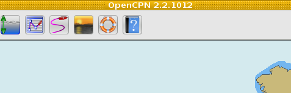
Location of Important Files. Log and config files.
- It is important to know the location of the log file and the configuration file, opencpn.conf or opencpn.ini, on your computer. If you ask questions on the forum, there is a fair chance that you will be asked about the content in these files. Once you get familiar with OpenCPN, have a look at the files!
- The configuration file is where all data, that needs to be persistent between sessions, is stored. In the same directory as these files is the SENC directory, where all the processed S57 ENC vectorfiles are stored in a local format.
- To find the location of the log file go to the ToolBar click on
"About OpenCPN", the button furthest to the right. Look at the bottom
of the "About" Tab, highlighted below. The illustration is from a WinXP.
A quick way to view the logfile is to copy the full file path and then
paste this into the address field in a web browser.
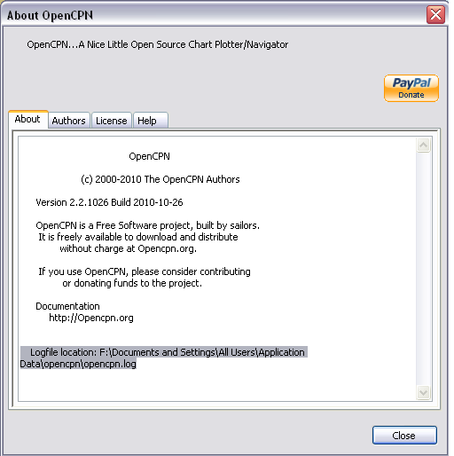 - On Linux the "opencpn.log" is in your home directory.
The "opencpn.conf" is in a hidden directory, called "opencpn", also in your home directory.
For a quick way to view the files you can try these commands.
$gedit `echo $HOME/opencpn.log`
$gedit `echo $HOME/.opencpn/opencpn.conf`
Of course you can swap "gedit" for your favorite editor. - On Windows 2000, XP and Vista and Windows 7 the two files, opencpn.log and opencpn.ini are in the same folder. So to find the location of opencpn.ini just go to the folder where the log is. Note that some folders in the path to the log and ini files may be hidden. Change settings to be able to view hidden and system files. .
Installing Charts
To install charts OpenCPN must be pointed to a directory containing recognized Chart Formats. Don't point OpenCPN to individual charts. You must specify the directory that contains the charts. Download some charts (see Chart Sources) and organize them in a fashion that suits you. You may want to consider storing them in a directory where they will not be tampered with or moved accidentally.Open the Toolbox by clicking
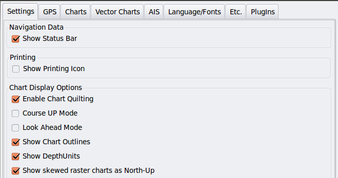
Then click the tab "Charts".

Under "Available Chart Directories" navigate to your chart-directory. Above we have found the NZ charts in the /opt/Navigation/Charts/BSB3 directory. When clicking the button "Add Selection" the selected chart directory appears in the box "Active Chart Directories". The screen-shots are from Linux, but this process works similarly on all platforms. All that remains is to click the "Ok" button. OpenCPN will then process your selection. You can now start using your charts.
Note that in OpenCPN you must add directories (folders) containing charts, not individual charts.
Start using your charts.
You can click and drag the chart with your mouse. The scroll wheel zooms in and out. Right clicking brings up a menu with useful actions. Exactly what the menu contains depends on the circumstances. Read the rest of the manual for a full explanation.
If you are running OpenCPN for the first time you may see a black background instead of the charts you installed. That simply means OpenCPN is pointed at a location that is not on any of the charts you installed. Scroll to a location on one of your installed charts as descirbe under "A few hints" below.
Starting with vector charts?
If you are new to vector charts on OpenCPN follow this quick-start guide:
1 Go to ToolBox
2 Press this button
These are not the perfect settings, but you will see most of what you expect from a vector chart.
As soon as you have made yourself reasonably comfortable with OpenCPN and before using Vector Charts for actual navigation, make sure you understand all the settings in the ToolBox-> Vector Chart Tab by reading this page.
A few hints.
- If all is just black, with maybe some blue lines, you are viewing the background world vector shoreline chart. You must move to the geographical position of the charts you just loaded. As you come close you will see the outlines of your loaded charts, in red for raster charts and in green for S57 vector charts. Click in the rectangle created by the outlines, to activate, and view the chart.
- If you ticked the "Show Chart Outlines" box under the "Settings" tab the loaded charts will be outlined in red for raster and green for vector charts. In CM93 the charts will be outlined in purple. The smallest scale charts in CM93, the Z scale and A scale charts, will not be outlined. Neither will all available charts be visible as outlines at the same time. The reason for this is computing speed and clarity. Generally the next level or two of larger scale charts are shown. When large scale plans are available directly from A scale charts, with no intermediate charts, the outline of the larger scale charts will be visible from a zoom level between 1.5 and 2.0. Generally in areas where only A or Z scale charts are available, expect potentially dangerous omissions. Warning, do not use CM93 small scale charts alone for navigation without referring to other sources.
- When using a vector chart for the first time OpenCPN has to process the data, and transform the information to an internal display format. This can take some time, depending on your computer. This internal SENC chart is then saved for future use.
- Be aware that it is possible to "Over-zoom" charts in OpenCPN. A warning will appear on the display. Please respect that warning. It is recommended to not zoom more than a factor 2, for safe navigation. The actual zoom-factor appears in the lower right-hand corner of the display.
- It is safe and reasonably efficient to put all your charts except the
CM93 database in one large directory, and set that directory in
Toolbox->Charts. The CM93 database contains its own file and
directory structure. The top-level directory only, of this database
should be loaded, as described above, into OpenCPN.
If you do a lot of chart downloads, updates, etc., then it will be faster to break the charts folder into smaller groups, and specify them individually in the Toolbox->Charts dialog. - The option "Force Full Database Rebuild" is mainly aimed at users converting or correcting existing charts, in a situation where minor changes are made to the geo-referencing or outline of the chart, or other attributes in the kap file header section.
- OpenCPN, supports Mercator charts, Transverse Mercator Charts and Polyconical Charts
(US Great Lakes). Charts using other projections will be displayed as
if they were Mercator charts, but they will not be used for quilting.
Most charts are using Mercator projection, so this limitation is not too
bad.
Other projections, such as Gnomonic, are mainly used in older larger scale BA charts, for smaller areas, for example harbor plans, in scales larger than 1:50,000.
The errors introduced in OpenCPN by treating these charts as Mercator are generally small, but be aware of this limitation.
These operating systems have a problem handling chart names containing spaces and non ASCII characters. A typical example is Swedish chart names. To sort this out use the utility program detox. Detox changes the file names so space becomes "_"; "(" and ")" become "-"; and "å","ä" and "ö" become "a","a" and "o", etc.
To see what "detox" suggests to do, try a dry run first, like this:
detox -n File_with_swedish_charts > outfile
Chart Formats
OpenCPN supported chart formats:
BSB / RNC / KAP Versions 1, 2 and 3.
(BSB Version 4 and later are not supported due to proprietary encryption algorithms.)
NOS/GEO Version 1 Subsequent versions are probably supported but need to be tested. However, this format is obsolete for new charts.
CM93 Version 2.
(C-map Version 3 and later are not supported.)
S57/S52 (ENC).
(S63 Encrypted ENC is not supported. This is the format for the majority
of newly produced vector charts from many national hydrographic
offices. S63 charts are exactly the same as S57 except the they are
encrypted to keep them from being illegally distributed.)
Formats, that with some effort, can be used.
Generally chart pictures in gif, jpeg, pdf, png, tif, bmp and other formats can be used, when properly geo-referenced, to generate KAP file (BSB / RNC) that OpenCPN can display. For the details about this process see the chart thread in the forum. Also, make sure to browse around the forum as there are a handful of other interesting chart related threads.
WCI charts generated with SeaClear and MapCal can
also be transformed to BSB charts and used by OpenCPN. The key is to
open a WCI chart in MapCal and convert it to a BMP picture, and then
transform this picture to a tiff file, using for example ImageMagic.
More about using MapCal, a part of SeaClear, for chart conversions, is available here.
OziExplorer charts consisting of picture in one of
the standard formats, together with a georeferencing ".map" file, can be
converted to a bsb kapfile. A Ruby script for this conversion is
available here.
Ozi charts of the ozfx2 or ozfx3 format can not be converted with this
tool. These Ozi formats are not documented and proprietary, and cannot
be displayed in OpenCPN.
Before Maptech started to produce BSB charts the HDR format was used in the late eighties to mid nineties. These charts consists of many picture tiles in pcx format, more than 100 tiles is not unusual. The tiles can be merged to one picture and then used as any other picture to make an OpenCPN compatible chart. For details on this process see the Chart Conversion Manual and this post and the following posts in the forum. A script for merging the pcx tiles to one picture is available here.
The HDR format is from an era when computer-memory and processing power were less powerful than today, as a consequence these charts are not of the same quality as more modern charts. Furthermore, most of these charts are not using WGS84 as reference datum. These charts should not be the first choice, but can be useful if nothing else is available.
Other formats that are not supported.
The Hydrographic Chart Raster Format (HCRF), used by the United
Kingdom Hydrographic Offices' ARCS (Admiralty Raster Chart Service),
Australian Hydrographic Services' Seafarer products and the NZMariner, New Zealands Official charts, are not supported. This is also due to proprietary encryption algorithms and copyright issues.
Mapmedia's various chart formats are not supported, for the same reasons as for the other proprietary charts.
Chart Sources
Where to find free charts
- To get you started quickly, here are three sample raster charts from Puerto Rico:
- Right click and use "Save Link As", or similar. Just clicking shows you the actual file as a text file (this is an advanced subject, to be treated later). Don't use these charts for navigation. Download their current versions from NOAA's Web site.
- For those interested in U.S. waters, raster charts and S57 vector charts are now available for free download from NOAA. Find all NOAA charts, both raster (RNC) and vector (ENC) charts, for your region through NOAA OCS Website at: http://www.nauticalcharts.noaa.gov/staff/charts.htm.
- Official Inland Electronic Navigation Charts (IENC) of U. S. inland waterways are available from the US Army Corps of Engineers at http://www.agc.army.mil/echarts/inlandnav/.
- Links to a wide selection of ENC's for U.S. inland waters and other countries are available at : http://www.dacust.com/inlandwaters/index.html.
- Brazil publishes free raster charts (RNC) for their whole coast and new charts for inland waters are published regularly.There is also coverage for part of Antarctica. Here is a direct link to the download page: Brazilean Charts. Don't miss the link to CARTAS DE RIOS at the bottom of this page.
- The East Asia Hydrographic Commission provides free offshore S57 vector charts for the South China Sea area at: http://scsenc.eahc.asia/main.php. The motivation for releasing these charts is well worth reading.
Realizing that official and high quality small scale ENCs conforming with the established IHO standard were not available for the SCS, the EAHC MSs decided to cooperate closely and resolve the situation so that mariners could use most up-to-date chart information for voyage planning and enhancing safety of navigation, rather than resorted to some commercially developed electronic products which were either prepared in proprietary formats, or containing unofficial data with very infrequent updating... It was the view that if the SCS ENC could be freely and widely available to mariners, it would further enhance the safety of navigation in the region. This in turn could reduce the chances of environmental damage from grounding and oil pollution, which have tremendous cost impact. The EAHC decided to provide the SCS ENC to users free of charge.
- Colombia and Australia publish sample S57 single charts.
- New Zealand publishes high quality tiff pictures of almost all their charts. From a start in the last few months of 2009 the work to create OpenCPN compatible charts from these pictures has quickly matured. For the latest on this subject, check the "New Zealand Charts" thread in the Forum. All NZ charts are now available for OpenCPN here.
- Many European countries publish free S57 ENC charts for their inland waterways:
Austria
Belgium
Bulgaria
Croatia
Czech Republic
Hungary
Netherlands
Romania
Serbia
Slovakia
Switzerland - The US Pilot Charts, are available as BSB charts, on the OpenCPN.org download page.
Setting Up GPS
Windows 98/ME/2000/XP/Vista/7
Note that the extensive use of the cheap gps mouse BU-353 as an example below, should only be seen as an illustration, not a recommendation. As a matter of fact, there is a documented bug when using BU-353 on Windows 7, so this combination is not recommended for now.
To use OpenCPN with a GPS, a GPS receiver is needed.
There are a variety of possible choices for a GPS receiver:
- A computer, such as a Sony Vaio P has a built in GPS receiver
- A NMEA Expander to amplify a nmea stream to multiple listeners
- A handheld GPS receiver
- A dedicated GPS receiver
The remainder of this section describes using OpenCPN with a dedicated GPS receiver, however, the instructions for a dedicated receiver will be similar for any serial/USB connected NMEA data stream.
A Dedicated GPS Receiver
There are several companies making dedicated GPS receivers. The Supplementary Hardware section for GPS devices lists several manufacturers.
NMEA has traditionally been implemented as a serial protocol and
therefore, even if a USB connection is used, there needs to be a USB to
Serial Port conversion. The specific driver for the each GPS receiver
will handle this conversion.
Configuring BU-353
It is not necessary to use the installation disk to setup the BU-353. Following the steps listed below will result in the latest driver being installed.
- Download the latest driver from Prolific - http://www.prolific.com.tw/Eng/downloads.asp?ID=31
- Unzip and install the driver
- Plug in the BU-353.
- Start -> (Right Click) My Computer -> Properties -> Hardware ->Device Manager
or Start->Run devmgmt.msc - Expand Ports
- Look for the “Prolific USB-to-Serial Comm Port” and note the com port number (e.g., COM4)

- Right click on the “Prolific USB-to-Serial Comm Port”. Choose Driver
- Select 4800 bits per second, 8 data bits, None parity, 1 stop bit, and None for Flow Control

- Start OpenCPN
- Click on the ToolBox Icon
- Select GPS
- Under NMEA Data Source select the Com port noted in #6
- Choose OK
- Select Auto Follow to center the map over your GPS location
Troubleshooting
There is a small LED located on the BU-353. If the LED is off there is no power being received. Check the connection.
If the LED is solid it indicates the BU-353 is searching for a GPS signal. Try moving the GPS receiver to a clear location.
If the LED is flashing it indicates the BU-353 has a position fix and is transmitting data.
- Try viewing the NMEA data stream in OpenCPN. Choose ToolBox->GPS->click Show GPS/NMEA Data Stream Window
- Alternatively, a diagnostic program is included on the installation CD called GPSInfo.exe. Launch this program to install the diagnostic utility.
If it appears that the NMEA data stream is being received, the most likely issue is that OpenCPN is not centered over your location. Click AutoFollow to center the map at your GPS location.
Known Issues
If you change the USB port for the GPS receiver Prolific will reassign the COM port number. This will require repeating steps 4-12 above.
On some computer / GPS receiver combinations when the computer
resumes from Stand By the GPS receiver will no longer transmit its NMEA
data stream, and only garbage instead of ASCII characters will be
visible in the NMEA Data Stream Window. The red indicator led will not
work.
To change back to NMEA mode search for and download SIRFDemo.exe.
Unpack and start. Set correct Baud rate and and com port as above.
Click connect to data source button. Action -> Switch to NMEA protocol, then exit.
There are many more settings available in SIRFDemo.exe
An alternative workaround for this issue is provided by using a COM port splitter such as XPort http://curioustech.home.insightbb.com/xport.html
- Download XPort.
- Unzip it to a folder of your choice
- Double Click XPort.exe
- Set the Baud Rate to 4800
- Under Enable Ports add an entry for COM10
- Click “Find GPS”. The port returned should match the port identified in Step #6 in the Configuring BU-353 Section
- Select Prolific USB-to-Serial Comm Port in the check box section
- Return to OpenCPN
- Click on the ToolBox Icon
- Select GPS
- Under NMEA Data Source change the Com port to COM10
Linux
Two methods are available, direct connection or through gpsd.
We start with gpsd.- Install the gpsd and gpsd-clients packages
- $ sudo apt-get install gpsd gpsd-clients
- Go to Toolbox-->GPS and select "Network GPSD" as your "NMEA Data Source", unless you have a gpsd version in the 2.9.x series( Ubuntu 10.04 and other new distros). In this case choose Toolbox-->GPS --> "NMEA Data Source" -->"Network LIBGPS".
- On Ubuntu 9.10 and later, that is really all you have to do. When you plug in your gps this will trigger gpsd to start.
- "xgps" is client that comes with the gpsd-clients package, and is usefull for testing that the gps and gpsd is working properly.
Direct connection.
- Make sure that gpsd isn't running then connect your gps and start OpenCPN.
- In the Toolbox-->GPS --> "NMEA Data Source" the port where you plugged in your gps will come up. If you plugged in BU 353 this will probably be /dev/ttyUSB0.
- Choose 4800 baud, unless you know that the gps is set to something else.
- The gps should now work....if not, check the NMEA data stream window. If only binary garbage is visible, the gps has to be reset to NMEA mode, see more about this above in windows section.
- To do this in Linux for BU 353 as well as many other gps:es, make sure that gpsd is running and that the package "gpsd-clients" is installed.
- The command $gpsctl -n wil put the GPS into NMEA mode.
- If gpsd isn't running use $ gpsctl -f -n /dev/ttyUSB0
- More information is as always available through "man gpsctl" Close down OpenCPN before running gpsctl.
None of this is normally noticed when using gpsd, as this program reads both NMEA and SIRF binary sentences. - More Linux hints
- Check if gpsd is working:
$ ps aux | grep gpsd
nobody 12338 0.3 0.1 4124 1448 ? S<s 18:31 0:00 gpsd -F /var/run/gpsd.sock
you 12356 0.0 0.0 3036 800 pts/3 S+ 18:32 0:00 grep --color=tty -d skip gpsd
This or similar responses indicate that gpsd is running. If you only have something like the second line, ....it is not running. - Run the command "$udev monitor" to see exactly, and instantly what is going on when you plugin your gps.
- Run the command "$ls -lrtd /dev/*|tail -10", and see the
10 latest created device files. Run this just after plugin in your gps
to see which device was created.
- Determine which device your GPS is on your linux system
by checking the startup. Look for a line that says something about GPS
and /dev/ttyUSB#
-
$ dmesg
Or even better, after connecting a gps mouse, BU-353, we look for a dmesg by running this command.
$ dmesg | grep tty and get this response back. [13616.095305] usb 2-3: pl2303 converter now attached to ttyUSB0
-
- Add a script to start gpsd, if this is not done by your
distribution. I saved mine as startgps and set the executable
attribute. Edit line 3 to match your device, ie /dev/ttyUSB0
-
#!/bin/sh sudo killall gpsd sudo gpsd -n -D 2 /dev/ttyUSB0
-
- Run the script:
-
$ ./startgps
-
and configure your GPS source, chart directories, and other settings.
Other Distributions
- Install gpsd from source. More information is available here: http://gpsd.berlios.de/
Bluetooth GPS Ubuntu.
If you have a bluetooth GPS you will need to first configure it through the standard Ubuntu Bluetooth "set up new device " proceedure.
Once you have done that you will need to find what the address of the GPS is. To do that you run this command.
sudo hcitool scan
it will then start looking for the Bluetooth GPS and hopefully find your GPS. You should see something similar.
Scanning ...
00:1C:88:10:D3:4D iBT-GPS
In this case i have a IBT-GPS at address 00:1C:88:10:D3:4D (Your GPS address will be different)
Next we have to bind the GPS address to a "virtual" device OpenCPN understands in this case rfcomm0
we do this with the following command.
sudo rfcomm bind /dev/rfcomm0 00:1C:88:10:D3:4D Note put your GPS address in this line
It is my understanding you do not have to run these commands each time your linux is restarted as it will remeber your GPS address.
Now all you need to do is go into OpenCPN Toolbox and select GPS
Now in the NMEA Data Source options select from the pulldown menu
/dev/rfcomm0
Thats it you should now have a Bluetooth GPS Connected.
Mac OSX
 This article is in not complete. You are welcome to assist in its construction by editing it as well. Everyone is allowed to edit after creating an account and/or logging in.
This article is in not complete. You are welcome to assist in its construction by editing it as well. Everyone is allowed to edit after creating an account and/or logging in.
- Add howto here
- Install the gpsd and gpsd-clients packages
GPS Status
The GPS staus is indicated all the way to the right in the toolbar.
NMEA Sentences
OpenCPN Recognized NMEA Sentences:
- HDM - Heading, Magnetic
- HDG - Magnetic heading, deviation, variation
- HDT - Heading, True
- RMB - Recommended Minimum Navigation Information
- Status, V = Navigation receiver warning
- Cross Track Error - nautical miles
- Direction to Steer, Left or Right
- TO Waypoint ID
- FROM Waypoint ID
- Destination Waypoint Latitude
- N or S
- Destination Waypoint Longitude
- E or W
- Range to destination in nautical miles
- Bearing to destination in degrees True
- Destination closing velocity in knots
- Arrival Status, A = Arrival Circle Entered
- RMC -Recommended Minimum Navigation Information
- Time (UTC)
- Status, V = Navigation receiver warning
- Latitude
- N or S
- Longitude
- E or W
- Speed over ground, knots
- Track made good, degrees true
- Date, ddmmyy
- Magnetic Variation, degrees
- E or W
- WPL - Waypoint Location
- Latitude
- N or S (North or South)
- Longitude
- E or W (East or West)
- Waypoint Name
- RTE - Routes
- Total number of messages being transmitted
- Message Number
- Message Mode
- c = complete route, all waypoints
- w = working route, the waypoint you just left, the waypoint you're heading to, then all the rest
- Waypoint ID
- More Waypoints
- GGA - Global Positioning System Fix Data
- Universal Time Coordinated (UTC)
- Latitude
- Longitude
- GPS Quality Indicator
- Number of satellites in view, 00 - 12
- Horizontal Dilution of precision
- Antenna Altitude above/below mean-sea-level (geoid)
- Units of antenna altitude, meters
- Geoidal separation, the difference between the WGS-84 earth
- Units of geoidal separation, meters
- Age of differential GPS data, time in seconds since last SC104
- Differential reference station ID, 0000-1023
- Checksum
- GLL - Geographic Position, Latitude / Longitude
- Latitude
- N or S (North or South)
- Longitude
- E or W (East or West)
- Time (UTC)
- Status A - Data Valid, V - Data Invalid
- GSV - Satellites in view
- Number of sentences for full data / sentence 1 of 2
- Number of satellites in view
- Satellite PRN number
- Elevation, degrees
- Azimuth, degrees
- SNR - higher is better / for up to 4 satellites per sentence
- Checksum
- VTG - Track Made Good and Ground Speed
- Track Degrees
- T = True
- Track Degrees
- M = Magnetic
- Speed Knots
- N = Knots
- Speed Kilometers Per Hour
- K = Kilometres Per Hour
- VDM - Automatic Information System (AIS) position reports from other vessels
- Time (UTC)
- MMSI Number
- Latitude
- Longitude
- Speed Knots
- Heading
- Course over ground
- Rate of turn
- Navigation status
Basic Features
Let's take a look at some of OpenCPN's basic features.- Ship Track
Toolbar Buttons
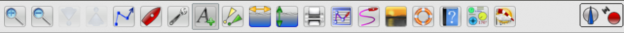
A brief explanation is available by just hovering with the cursor over each button.
From left to right:
 Zoom In (Zoom In & Out)
Zoom In (Zoom In & Out)
 Zoom Out (Zoom In & Out)
Zoom Out (Zoom In & Out)
 Scale Next Chart Down (Scaling Charts) 1
Scale Next Chart Down (Scaling Charts) 1
 Scale Next Chart Up (Scaling Charts) 1
Scale Next Chart Up (Scaling Charts) 1
 Create Route (Routes and Marks)
Create Route (Routes and Marks)
 Find/Follow Boat (Auto Follow and Display Orientation)
Find/Follow Boat (Auto Follow and Display Orientation)
 Launch Toolbox(Toolbox Settings)
Launch Toolbox(Toolbox Settings)
 Show Text Labels on Vector Chart.(Vector Chart Display)
Show Text Labels on Vector Chart.(Vector Chart Display)
 Show AIS Targets 2 3 (AIS)
Show AIS Targets 2 3 (AIS)
 Show/Hide Currents On Chart (Tides and Currents)
Show/Hide Currents On Chart (Tides and Currents)
 Show/Hide Tides On Chart (Tides and Currents)
Show/Hide Tides On Chart (Tides and Currents)
 Print 4
Print 4
 Route/Track/Waypoints- Manager.(The Route Manager and Data Import/Export)
Route/Track/Waypoints- Manager.(The Route Manager and Data Import/Export)
Toggle Track On/Off 4 (Ship Track)
 Adjust Screen Brightness for Dawn/Dusk and Night viewing.(Change Color Scheme)
Adjust Screen Brightness for Dawn/Dusk and Night viewing.(Change Color Scheme)
 Drop Man Over Board(MOB) marker(Man Over Board)
Drop Man Over Board(MOB) marker(Man Over Board)
 About OpenCPN and Help File
About OpenCPN and Help File
 Show/hide the Dashboard Plugin 4 (The Dashboard Plugin)
Show/hide the Dashboard Plugin 4 (The Dashboard Plugin)
 Grib Overlay Plugin 4 (GRIB Weather Plugin)
Grib Overlay Plugin 4 (GRIB Weather Plugin)
 Course Up/North Up 3 (Auto Follow and Display Orientation)
Course Up/North Up 3 (Auto Follow and Display Orientation)
 GPS status 3 (GPS Status)
GPS status 3 (GPS Status)
Note 1: These icons are "grayed out" when only CM93 vector-charts are available, as the feature makes no sense.
Note 2: AIS button is available if an Ais Data Port is defined in the ToolBox AIS Tab.
Note 3: These icons changes, depending on status.
Note 4: These icons can be enabled or disabled from the ToolBox
Printer 'ToolBox-Settings-Show Printing Icon' to hide or un-hide.
Tracks 'ToolBox-Etc.-Show Track Icon' to hide or un-hide.
Grib plugin. Activate in Toolbox-Plugins by first clicking the feature and then "enable".
Dashboard plugin. Activate in Toolbox-Plugins by first clicking the feature and then "enable".
Right-click Menu
The right click menu is always available as long as the cursor is somewhere in the chart area. The content of this menu is context sensitive. If you are dealing with routes, clicking on a leg or waypoint for example, your menu contains more entries than just clicking at a random position. Below, the basic entries are explained. The context specific entries are dealt with as the concerned feature is explained.The basic raster chart right-click menu
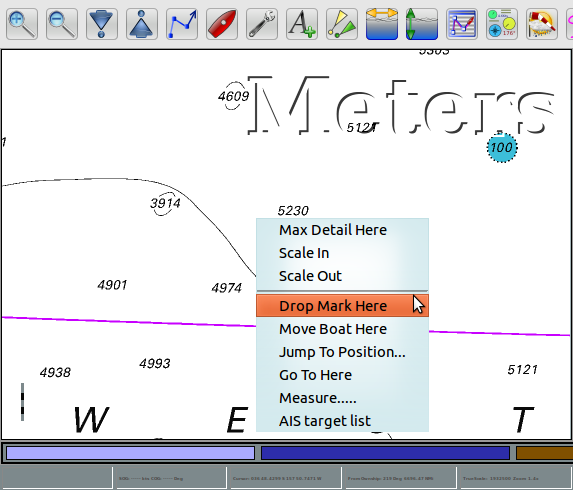
Max Detail Here
Displays the largest scale, most detailed chart, available in the position of the cursor.Scale In
Displays the next larger scale chart.Scale Out
Displays the next smaller scale chart.Drop Mark Here
Drops a mark in the position of the cursor. Further explained on this page: opencpn.org/routes_and_marksMove Boat Here
Moves own boats position to the position pointed at. This only works if the GPS isn't connected.Jump to Position...
Activates a small dialog where latitude and longitude can be entered. Pressing "OK" centers the display on this position, keeping the same scale. The values entered is kept during a session, but goes when restarting OpenCPNGo to Here
Creates an instant active route from own boat to the position clicked. More about routes here.Measure
Activates a "pencil". Move the pencil with the cursor. Put the tip of the pencil on a position that you want to measure from. Left-click, a dot with a circle around is created.Move the pencil with the mouse and see the distance and bearing from the point to the penciltip in "real time". Left-clicking again moves the start point for measuring. Right-clicking anywhere gives the option "Measure off"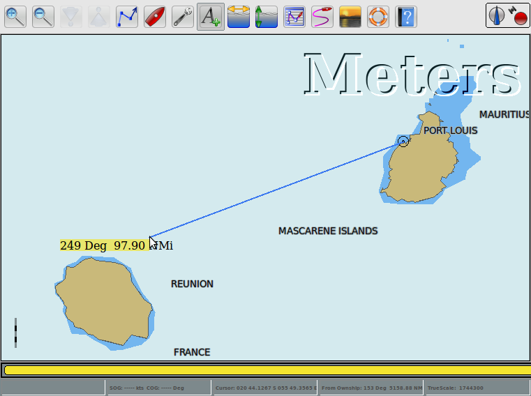
AIS target list
Is not a basic entry, but is displayed in this case as an ais port is entered. More here.The basic vector chart right-click menu

The difference compared to the raster chart is that the three first entries has been replaced with...
Object Query
Every point on a vectorchart has certain attributes, or information. This can vary from just the depth in mid ocean to much more. Here is an example from a lateral bouy in the entrance chanel to a medium sized port.
Clicking the "Light" in the left part of the dialog tells all the details about the light on the bouy. Much more about his on the vector chart page.
Zoom In & Out

 These buttons allow you to zoom in and out on the chart currently being displayed.
These buttons allow you to zoom in and out on the chart currently being displayed.
 Will zoom the chart in for more detail, larger scale.
Will zoom the chart in for more detail, larger scale.
 Will zoom the chart view out for more area, smaller scale.
Will zoom the chart view out for more area, smaller scale.
Alternatively, the + and - keys on your keyboard will zoom in and out. If you have a mouse with a scroll wheel, it can also be used to quickly zoom in and out.
Scaling Charts

 These buttons will allow you to change the scale of chart you are using, unless
only CM93 charts are loaded, in which case these buttons has no effect,
and are grayed out. If just a yellow bar is visible in the Chart
Selection Bar, above the Status Bar, then CM93 is the only available
chart for the area.
These buttons will allow you to change the scale of chart you are using, unless
only CM93 charts are loaded, in which case these buttons has no effect,
and are grayed out. If just a yellow bar is visible in the Chart
Selection Bar, above the Status Bar, then CM93 is the only available
chart for the area.
 Will scale down/out to the next chart of less detail but greater area, if available, within the current view
Will scale down/out to the next chart of less detail but greater area, if available, within the current view
 Will scale up/in to the next chart of greater detail but less area, if available, within the current view
Will scale up/in to the next chart of greater detail but less area, if available, within the current view
Hint: Scaling down and up coresponds to available charts left and right on the Status Bar.
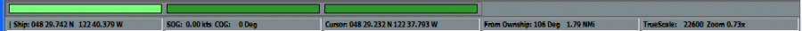
Chart Quilting
Chart quilting is a way to display parts of several charts together on the screen, redrawn to the same scale.Limitation
Chart quilting does not work with Transverse Mercator charts, that are widely used in countries like New Zealand and Sweden. More about this subject further down.
Quick Start
Hit F9 to get into quilting mode. Zooming in, automatically brings up larger scale charts,
if available. Panning reveals a continuous quilt of the available charts. If you started with a raster chart, only raster-charts, and perhaps CM93, will be in the quilt. The same logic applies to S57 Vector Charts (ENCS). Make sure you are familiar with the Status Bar as this will help you interpret all available information. The quilt, like a single chart can be displayed North Up or Course Up read more: Auto Follow and Display Orientation.
More details
What is the use of this feature?

In single chart mode, getting near the edge of the chart there is no information outside the chart.
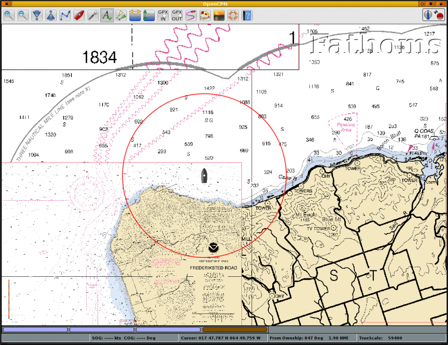
The situation changes dramatically when quilting mode is activated. The amount of relevant information on the screen increases.
Displaying charts
OpenCPN has two modes of displaying charts, single chart mode and quilting mode.To activate chart quilting go to Toolbox -> Settings -> Chart Display Options and tick the box "Enable Chart Quilting", tick the box "Show Chart Outlines" at the same time as this will help you see which chart mode is active.
Alternatively chart quilting mode can be toggled on/off with the "F9" key.
Is Chart quilting on?
When quilting is on, all chart outlines disappear.
When hovering with the mouse pointer over a chart button in single chart mode, a thumbnail of the chart is displayed in the upper left corner of the screen. At the same time an information box pops up above the button with details about the chart. This changes with quilting as the thumbnail is replaced with a high-lightning of the charts part in the quilt with a transparent reddish color.
The exception to the last rule is CM93 charts. When an area is only covered by CM93 charts, indicated by a long yellow chart button in the status bar, and in quilting mode, no info-box is displayed and no reddish highlighting is taking place.
More than one chart can be displayed and active at the same time, on the picture above, for example there are three pale blue buttons, as there are three raster-charts in this quilt. In single mode only one chart button is highlighted at a time.
Depth units that is normally shown in the upper right corner of the display, if activated in the toolbox, is only displayed in quilting mode if all participating charts uses the same unit.
Zoom level, normally displayed on the far right on the Status bar, is not present in quilting.
Many of these features are illustrated in this screen-dump.

This is a quilt consisting of three raster charts, two that are actually displayed and one smaller scale chart that is hidden behind the larger scaled charts of St Croix.
The mouse pointer is over the middle raster chart and the chart information box is shown, together with the red highlighting of the chart on the screen.
No depth unit is shown in the quilt as the left chart is in Feet and the right in Fathoms an parts thereof. Notice the lack of zoom level in the status bar, a quilt , by definition, consists of several different zoom levels.
Which charts are quilted?
There are several rules built into OpenCPN governing exactly how different charts reacts to the quilting mode.
Raster charts and Vector charts are quilted separately and don't mix together. You can quilt either raster charts or vector charts, but not both at the same time. The exception to this rule is that CM93 ver2 charts, if available, are shown if no other chart cover exists for a displayed area, for both raster- and vector- chart quilting.
CM93 ver2 charts can be quilted separately.
Mercator Charts are always quilted in quilting mode
Polyconic Charts, are allowed in a quilt together with Mercator charts, but a warning is issued in the chart information box, for poor georeferencing. I other words expect lower accuracy from the chart.
Skewed Charts are allowed in the quilt as long as it doesn't deviate more than 5 degrees
from North Up.
Transverse Mercator Charts are not quilted at all, neither with other charts nor among themselves.
User control.
Users can control if an individual chart, is allowed in the quilt or not. Right clicking on any chart in a quilt and clicking "Remove this chart from quilt" on the pop up menu, removes the chart from the quilt. The chart button in the Status bar changes to
To activate the chart again right click this button an then click "Ad this chart to quilt"
Status Bar
On the bottom is the Status Bar(s). Activated from 'Tool Box-Show Status Bar'.
The top line, 'Chart Selection Bar', has the following description.
It shows all the available chart for the present view represented by one
segment for each chart. The order between the segments represents the
scale of the charts. Largest scale to the left, smallest to the right.
If CM93 is available, it is always furthest to the right.
The segmented color bars in the Status Bar represent:
- Blue for Raster
- Green For ENC's
- Brown/Yellow for CM93 charts
- The current chart displays as a lighter shade of its color, or if quilting is active, the charts currently making up the quilt are displayd in lighter shade.
- The Chart bar below consisting of 12 segments shows a quilt of two active charts. Five charts in the quilt are hidden, due to small scale. CM93 is in it's place, to the right. Four charts of larger scale than the present view are available. The largest scale chart is a Transverse Mercator chart.

When you hover the mouse pointer over the bar, and not in quilting mode, a thumbnail of the chart will appear under the Scaling Charts icons
and a chart information box will pop up just above the button. If
quilting is on, instead of a thumbnail, the chart represented by the
button will be highlighted in a transparent reddish color. By clicking
on the appropriate bar, or using the appropriate Hot Keys,
you will switch to the chart shown in the thumbnail. This feature is
especially useful if you wish to view an ENC or a Raster chart of the
same area.
The bottom line starting from the left, has the position of the GPS
that feeds OpenCPN (your ship or boat). SOG, COG, Cursor (position),
From Ownship and TrueScale and Zoom Factor are in other boxes. If the
Zoom Factor is missing on the far right, the chart quilting feature is
activated.
The buttons are displaying a lot more information however.
 These buttons shows that the two charts are Transverse Mercator.
These buttons shows that the two charts are Transverse Mercator.
 This button indicates that the chart is a Poly Conic chart.
This button indicates that the chart is a Poly Conic chart.
 This button shows that the chart is skewed, and not Norh Up.
This button shows that the chart is skewed, and not Norh Up.
 This chart is excluded from quilting because of user action. Right
This chart is excluded from quilting because of user action. Right
click to include in quilting again.
 The raster chart represented by this button don't participate in the
quilt because it is hidden by other, larger scale charts. Vector charts
are represented similar.
The raster chart represented by this button don't participate in the
quilt because it is hidden by other, larger scale charts. Vector charts
are represented similar.
To illustrate a lot of this, here is a screen shot in quilting mode.
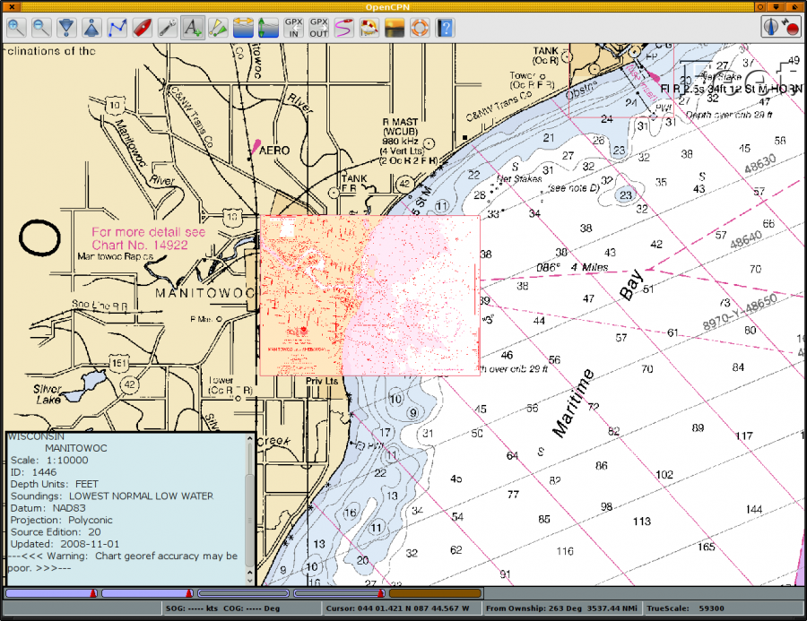
The screen is a quilt of two Polyconical charts. Hovering the mouse
pointer over the left chart-button highlights the lager scale chart for
Manitowoc. Two smaller scale charts that cover the area displayed on the
screen are included in the quilt, but are invisible as they are covered
by the larger scale charts. To view these charts, right-click anywhere
on a chart in the quilt and select "Remove this chart from quilt", one
of these charts will now be shown in the quilt.
The Brown right most button shows that CM93 version 2, charts are available for the area, but not currently displayed.
The information box shows relevant information about the chart. We can
see that the chart is Polyconic, and because of this a warning is
displayed for poor accuracy. The reason is, that although Polyconic
charts are allowed to participate in quilting, the result is not totally
free from errors, however small.
Auto Follow and Display Orientation
- Clicking the Auto Follow button
 will center the chart directly on your vessel's current location. If the the gps is working own ship is red
will center the chart directly on your vessel's current location. If the the gps is working own ship is red  otherwise the icon is gray.
otherwise the icon is gray. 
- The default own ship icon can be replaced by putting a file "ownship.xpm" in the User icons shared data directory. More about this shared directory here: Routes and Marks
- The Auto Follow button useful for two different situations:
- When you have panned the map away from your current location and want to quickly move back to your vessel.
- When underway, this will keep the display on the chart around your vessel, with the boat at the center of the chart.
- Note: Panning the chart will disable this mode. Simply click again to turn Auto Follow mode back on.
- The display can be oriented two ways, normally it is North Up but Course Up is an alternative.One situation where course up might be considered is when navigating a river or a canal.
 This icon (blue color) to the far right in the ToolBar indicates that the display is in North Up mode. This is a toggle button. Click it and ...
This icon (blue color) to the far right in the ToolBar indicates that the display is in North Up mode. This is a toggle button. Click it and ... and it turns red for Course Up mode. These setting can also be controlled in the ToolBox -> Settings -> Chart Display Options ->Course Up Mode
and it turns red for Course Up mode. These setting can also be controlled in the ToolBox -> Settings -> Chart Display Options ->Course Up Mode- Note that both the red and the blue arrows are always pointing North.
- Look Ahead! To see more of the chart in front of the boat, activate ToolBox -> Settings -> Chart Display Options ->Look Ahead Mode. Your own boat will no longer be in the center of the screen. Instead it will be located away from the center, in the opposite direction to your present gps course(COG).
- Don't always Look Ahead! If you are at anchor,
swinging on the hook produces random courses and low speeds.If Look
Ahead is on in this situation the chart rendering will constantly be
redrawn, with the boat in all possible lookahead positions as the course
changes. To prevent this kind of scenario OpenCPN works like this:
*If the boat speed is less than 1 kt, then lookahead is disabled.
*If boat speed is greater than 3 kts, lookahead is enabled.
*In between 1 and 3 kts, the lookahead "distance" is adjusted smoothly.
*If the problemis still there when doing mre than 3 kts, consider using "ToolBox->GPS-FilterNMEA Course and Speed data" to average out the "jumpiness". - Show skewed raster charts as North-up. Skewed charts are normally showed "skewed up", as it is intended. If ticking this box, these charts are shown North-Up by default. In both cases, activating course up, works as expected, the difference is when course up is not on.

Tides and Currents
Notes
- Tide and Current predictions are not available for all areas.
- As with all predictions, the displayed values are calculated using mathematical models and actual tides and currents will vary
Enable Tides and Currents Display
- Click the toolbar button
 to see tide stations.
to see tide stations. - Select
 to see current stations.
to see current stations. - Important: tide and currents will not be displayed unless these toolbar buttons are selected.
Displaying Tides
- Available tide stations will show on the chart as green graphs with a "T" logo:

- Right click the green icon to see tidal graph:
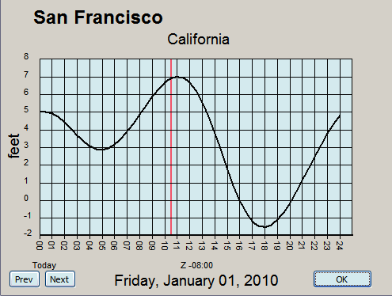
Displaying Currents
- Available current stations will show on the chart as orange arrows:
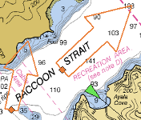
- Arrow indicates current direction and strength - the bigger the arrow, the more current.
- Right click the orange box
 to see current graph:
to see current graph:
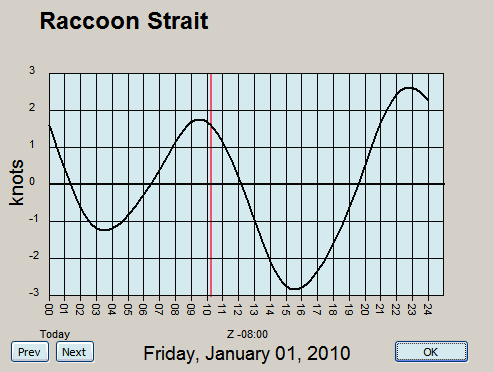
Ship Track
Toggling the track icon
turns tracking on and off. Tracking means that a record is kept of the
vessels position as it proceeds. A trail is left behind the vessel. To
display the tracking icon tick the box Toolbox->Etc->Show Track
Icon. Below the "Show Track icon" check box there are two more options
related to track recording. You may set how often a track point is
recorded every X number of seconds or X Nautical miles.
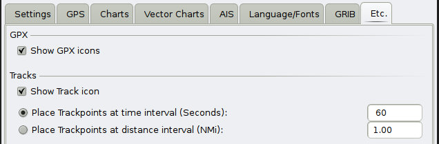
Recorded tracks can be imported, exported and managed using the The Route Manager and Data Import/Export.
When right clicking on a track you can select Track Properties from the
menu, and a new dialog pops up. The same thing can be achieved through
the Route Manager. A record of all the trackpoint will be listed. Below
we can see a trackpoint entry every minute, due to the selection above
of a trackpoint every 60 seconds. Click on either a "Leg" or "To a
Waypoint" item and a blue square will mark the position on the track.
From the right click menu the Delete track option is available as well.
For more about Tracks read about the Route Managers Track Tab in The Route Manager and Data Import/Export.

Man Over Board
Drop a Man Over Board Marker at your present position by pressing* Man Over Board Button
or hit the Keys
*Ctrl + Spacebar.
A mark, looking like the button is instantly created - the MOB mark.
The MOB mark will be called "MAN OVERBOARD at + time-stamp"
A temporary route, from a point 1 mile ahead on the current COG, and to the MOB mark is created and activated. On the screen, a course and bearing to the MOB mark will be displayed. This temporary triangular mark is labeled "1.0 NM along COG".
The temporary route can be deleted, in the normal way, but no action of the user with the mouse or keyboard will move or delete the MOB mark, except for opening the Route/Waypoint manager to delete the mark(s).
Multiple MOB marks can be deployed, and multiple temporary routes will be created. The active route will always be associated with the last dropped MOB mark.
Be very careful when using this capability in waters with strong tide or current.
The person overboard will not be at the position of the MOB mark fort long. Both Own Boat and the person in the water will move with the current, but OpenCPN knows nothing about this.
The MOB mark has just been dropped
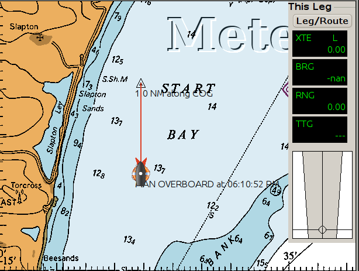
Own Boat has moved on and the MOB bark is 0.65 miles in bearing 200 degrees.
One option in this situation is to drag the triangle to the Own Boats position.
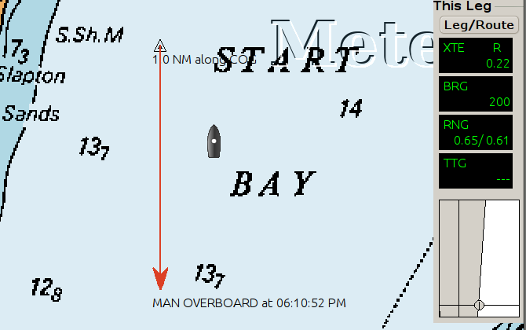
A second MOB mark is dropped.
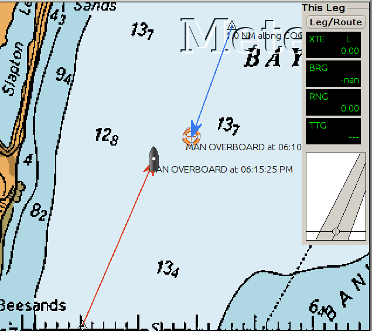
Toolbox Settings

Click this icon to open the Tool Box which has the following tabs.
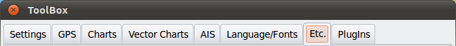
The Settings Tab

Show Status Bar: The
status bar at the bottom of the display contains a lot of navigation
information. If you have this inf available elsewhere, turning this
setting off increases the available space for the chart.
Show Printing Icon: When you need to print Chartlets
Enable Char Quilting: Chart Quilting.
Course Up Mode: Auto Follow and Display Orientation.
Lookahead Mode: Auto Follow and Display Orientation.
Show Chart Outlines: The
borders of the available charts are shown. Vector charts are green,
raster charts are red, and on CM93 available larger scale charts are
purple. The CM93 chart outlines are not on if using quilting mode. As a
safety precaution, the outlines of isolated dangers with large scale
charts available, are shown in CM93 even if "Show Chart Outlines" is
off, provided that quilting is not used and the scale is large enough.
At a scale of 1:200.000 or larger these isolated Islands and dangers
will be shown. Hence it is recommended not to use quilting in CM93 when
on a longer passage. More on cm93.
Show Depth Units:
Shows the charts depth units if available. When in quilt mode, depth
units are only shown if all charts in the quilt has the same depth unit.
Show skewed raster charts as North-up:
Skewed chart are normally shown as intended by the cartographer. With
this option they are rotated to show North-Up. Skewed charts are a
common feature along the US Intercoastal Waterway. More here: Auto Follow and Display Orientation
OwnShip COG arrow predictor.....: Shows a
red dashed line in front of your own boat, with present COG and ends in a
dot, which represents where you will be in the set number of minutes,
with the present speed.
If the ToolBox->Vector Charts->Enable Manual CM93 Offsets is
ticked, the lower part of the Settings Tab will look like this

For more on CM93 Offsets see this page. CM93_Offsets
The GPS Tab:

NMEA Data Source: Set the source for your GPS
connection. Note that you can write in this field. For example to get
"Gippy" to work with OpenCPN, this is where you write the path to the
virtual GPS created by Gippy. Similar, if you know that the GPS is on
COM3, but this port does not show up in the list, just write "COM3" in
the field.
Details for windows.
In the tab select the 'NMEA Data Source' from the choices shown in the
drop-down box, and choose the port to which your GPS is connected. If
you are using a standard serial port, then choose the proper physical
port number to match. If, on the other hand, you are using a USB GPS,
then you will select the virtual serial port which was created by your
GPS device driver. You may need to try several selections to find the
correct port. For XP/Vista: Using the Device Manager, look for a
serial port which appears and disappears dynamically as you plug and
unplug the USB GPS cable. This is your virtual GPS serial port. When
the properly configured GPS is connected, powered up, and recognized,
and a show a green  icon or gps status icon
icon or gps status icon  in the right end of the tool-bar. OpenCPN automatically configures
bits, parity, etc. These do not need to be separately specified.
in the right end of the tool-bar. OpenCPN automatically configures
bits, parity, etc. These do not need to be separately specified.
Details for Linux. Connect directly to one of the
available physical ports, or use gpsd. For gpsd versions earlier than
2.9, select "Network GPSD" else select "Network LIBGPS". For Ubuntu 10.4
and later select "Network LIBGPS".
GPSD Data Server: is normally "localhost", but it's
possible to have one gpsd server on a local network with many OpenCPN
clients. In this case, specify the network address of the gpsd server.
With OpenCPN it's possible to connect even a Windows instance, to a gpsd server this way.
NMEA Baude Rate: 4800 is the normal value for many devices, but some newer gps receivers require a different value. Check your documentation.
Use Garmin GRMN/GRMN(Host) mode for Waypoint and Route uploads.
Make sure that this box is ticked, if you have a Garmin GPS. The
reason for this is that Garmin units cannot accept route uploads via
standard NMEA0183. This is a "design feature" of all Garmin receivers.
Show GPS/NMEA data stream window: If you check this box you will get a window that shows the NMEA data sentences coming into OpenCPN.
If gpsd is used on Linux, no data will be shown.
For simple NMEA data stream debugging, add the following to your opencpn.ini file:Under [Settings] add a line
DebugNMEA=1500
This will provide up to 1500 debug messages pertaining to NMEA traffic to the opencpn.log
Filter NMEA Course and Speed Data: Providing a rolling
average of COG/SOG, with configurable sampling period. This feature is
useful, for example, if you find that course and speed from the gps is
varying erratically due to the sea state. The Dashboard plugin is not
affected by this setting - COG and SOG are updated about once per
second.
Autopilot Output Port: Connect any NMEA 0183 compatible autopilot. Select the correct serial port from the list.
The Chart Tab
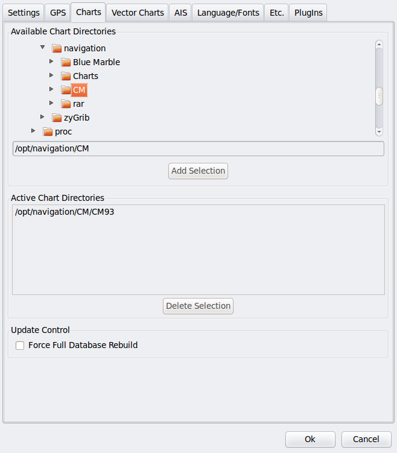
This is treated in detail Installing Charts
Vector Charts Tab
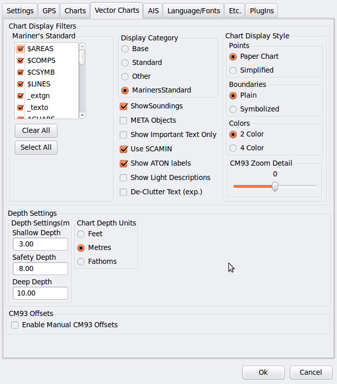
More about vectorcharts Vector Chart Display.
The AIS Tab
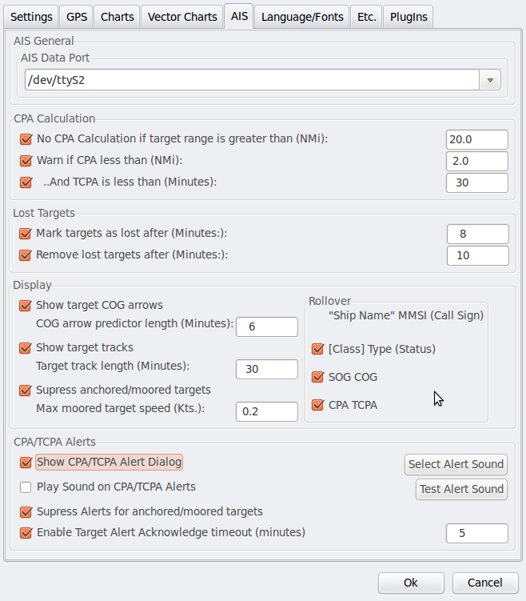
More about AIS.
The Language and Font Tab

Languages: The following languages are available in OpenCPN 2.3 :
Brazilian Portuguese
Czech
Danish
Dutch
English
Estonian
Finnish
French
German
Greek
Italian
Norwegian Bokmaal
Polish
Portuguese
Russian
Spanish
Swedish
Turkish
Choose your language here. Make sure your selected language has the
support files installed on your computer (Linux). Default language is US
English.
Font Options. Fonts can be selected for some elemets on the display.
The Etc. Tab

Tracks are Ship Track.
Radar rings: These show up as red rings centered on your gps position, and can be useful in different circumstances, such as keeping clear of dangers. The settings are, hopefully, intuitive.
Waypoint locking. Locks waypoints, and prevents accidental moving of them. This box should normally be ticked when under way.
GUI Options
Enable wheel-zoom-to-cursor: Normally when clicking on the screen, the display centers on the clicked point. The wheel zooms in/out always using the center of the display. With this box ticked, the zooming happens at the point of the cursor. This means that as soon as you start to zoom in the display centers on the cursor.
Preserve scale when switching charts: Normally when switching charts OpenCPN will open the new chart scaled close to it's natural scale, the zoom factor stays the same. With this box ticked OpenCPN will keep the scale from the last chart, when switching, not exactly, but generally of the same magnitude. The zoom-factor will increase as you switches to smaller scale charts.
Play ship bells: Every half-hour the traditional ship bell will be heard.
The Plugin Tab

The Plugin tab is treated on these pages
Plugins
Dashboard Plugin
GRIB Weather Plugin
Change Color Scheme
This ButtonThese represents the Default level, the Daylight level, the Dawn or Dusk level and finally the Night level. Generally there is no difference between the Default level and the Daylight level.
The way this button works differs between different category of charts.
S57 Vector Charts and the CM93 ver2 charts.
All charts display the Dawn/Dusk and Night levels. This means that there is no change when the button is first pressed, but further pressing brings up a Dusk and then a Night palette.
US Raster Charts
These works the same as the vector-charts.
Other Raster Charts
Most other raster charts just contains a standard palette, and pressing the Button has no effect other than dimming part of OpenCPN, except for the chart display.
The Brazilian Raster Charts includes a dusk and night palette, but the colors displayed is not what one would expect.
Charts converted with the help of libbsb and tiff2bsb, only contains one standard color scheme.
Setting up your computer for Night Navigation.
For night time navigation it is desirable to be able to dim the whole screen, not just OpenCPN. Consider the case when you have to consult a Cruising Guide in pdf format, for example.The solutions to this problem is platform specific.
Linux
Install the program xcalib, sudo apt-get install xcalib, or similar.Then associate keys on your keyboard with different xcalib commands.
Note that the setting below overrides some of OpenCPN's Hot Keys.
These are only suggestions, and depends on your local installation and preference.
SHIFT + F2 -> xcalib -co 80 -a
F2 -> xcalib -clear
ALT + SHIFT + q -> xcalib -c && xcalib -co 80 -a
ALT + SHIFT + w -> xcalib -c && xcalib -co 60 -a
ALT + SHIFT + e -> xcalib -c && xcalib -co 40 -a
ALT + SHIFT + r -> xcalib -c && xcalib -co 20 -a
ALT + SHIFT + t -> xcalib -c && xcalib -co 10 -a
With this setup holding SHIFT down and pressing F2 dims the screen in steps of 20%.
Pressing just F2 clears the screen to full brightness. Not a good move in the middle of the night! The other key combinations sets the screen to predefined dimming levels in steps of 20%, except for the last one.
Windows
This is more problematic. Check if your graphic card has a control program. On many cards it is possible to control, brightness, contrast and gamma, and get acceptable dimming of the screen.Mac
?Advanced Features
Let's take a look at some of OpenCPN's advanced features.Hot Keys
The Hot Keys native to OpenCPN are described below.These may not work on your computer depending on other settings on yor conputer.- Arrow Keys, Moves the chart view
- Alt + Arrow Keys, Moves the chart view in very small steps.
- + or Ctrl + Z Zoom In
- - or Ctrl + X Zoom Out
- F2 Toggle Auto Follow ON/OFF
- F3 or Ctrl + S Show / hide ENC Text
- F4 Starts the measure tool. Escape : Stops it.
- F5 Toggle Screen Brightness
- F7 or Ctrl + Left-Arrow Larger Scale Chart (Scale In)
- F8 or Ctrl + Right-Arrow Smaller Scale Chart (Scale Out)
- F9 Chart Quilting on/off
- F12 or Ctrl + O Show/Hide Chart Outlines
- Ctrl + L-Arrow or F7 Larger Scale Chart (Scale In)
- Ctrl + M Drop Marker at current cursor position.
- Ctrl + O or F12 Show/Hide Chart Outlines
- Ctrl + Q Quits OpenCPN
- Ctrl + R-Arrow or F8 Smaller Scale Chart (Scale Out)
- Ctrl + S or F3 Show / hide ENC Text
- Ctrl +space Man Over Board, sets MOB Marker at current GPS position.
Anchor Watch
Anchor watch can be set on any mark that you have created with OpenCPN, as long as the boat is within 5 cables of this mark. This means that the Anchor watch items, on the right click menu, will only be visible if your boat is within 0.5 nautical miles of any mark. A maximum of two marks can have anchor watch set at the same time.
This feature can be used in other situations than just anchoring, but keeping an eye on your anchor, and making sure it isn't dragging, is the main purpose. Below we are using the "Man Overboard" icon to mark the anchor, this is just an easy way, and not necessary for the anchor watch to work.To learn how it works let's make a dry run to a nice trade wind anchorage.
After circling around and exploring the bay, we know where we want to drop our anchor.
At the chosen spot we drop the anchor, at the same time we click the man overboard icon on OpenCPN to mark the point.
The wind, ENE at 15 kts let us drift back until we are satisfied with our scope. A burst in reverse convinces us that the anchor is set, later confirmed by a leisurely snorkeling over the anchor. Time to sort out the anchor watch
Right click on the man over board mark, choose properties, this brings up the "Mark Properties" dialog. We have to change a few things here to make it worthwhile setting the anchor watch. "Mark Name" is changed from "MAN OVERBOARD" to the watch circle in meters. In our case we have changed this to 60. We have 40 m of chain out, our gps antennae on our 40 footer sits at the pushpit, some minor gps uncertainties and a few extra meters for our anchor to dig in, is our reasoning for this. We also change the mark icon to something better than the life-buoy.
We right click on the mark once again, and choose "Set Anchor Watch" from the menu.
See picture above. The anchor watch is now active, and an alarm will be set off if the boat for some reason exits the circle. To deactivate the anchor watch, right click on the mark and select "Clear Anchor Watch".
To get protection from the wind and a bit of northerly swell, we have really anchored to close to the beach. To keep an eye on this potential danger we set another mark on the beach.
This time we set the "Mark Name" to -100, this means that if the boat comes within 100 meters of this mark, the alarm is set off.
An hour later, after a heavy squall passed, the wind goes light and flukey. The boat drifts towards the beach and the anchor alarm sounds and comes up on our computer screen.
The alarm sound is the same as the AIS warning sound and is set in the ToolBox under the AIS tab.
This is what happens if you activate the anchor watch without changing the name, the alarm is instantly activated. Clear the anchor watch and read from the beginning of the page.
AIS
For a general introduction to AIS Wikipedia is a god place to start.
The screendump below gives you a first feel for how AIS targets are presented and used in OpenCPN.
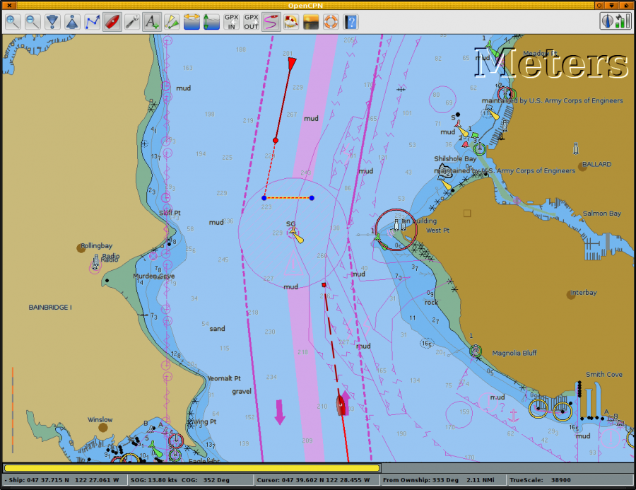
The Lookahead mode is activated here and our own vessel is
proceeding 352 deg at 13 kts, leaving an activated track behind, and
projecting a dashed line ahead representing the course. This ends in a
dot, that represents where we will be in 6 minutes, or 1.3 nautical
miles ahead. We are meeting a vessel, steaming in the opposite direction
following the traffic separation. This target also has a line and a dot
in-front of it representing course and where it will be in 6
minutes(user configurable). The two blue dots with a red/yellow line
between them, represents where the vessels will be at CPA - closest
point of approach, or when the are nearest each other, with present
courses and speeds. The meeting vessel is red, as it is a potential danger to us.
A lot of information about the vessels that transmits AIS signals and are displayed on the chart, is available.

The cursor is on top of the the meeting vessel on a SW course. As
we have not yet received full information, this can take a while, we
don't get the name but an id number, the so called MMSI number, instead.
Exactly what is shown in the yellow popup is configured in the AIS tabs
Rollover heading.

This vessel is identified by name, and has a green color, as it does not represent any danger to our navigation.
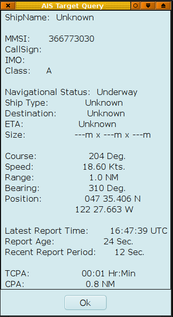
If we instead of just hovering the cursor on an
object, right click, the menu item AIS Target Query brings up the dialog
above. A lot of relevant information is displayed. TCPA is the time
until CPA, how long before we are at the closest point to the other
vessel.
Rollover: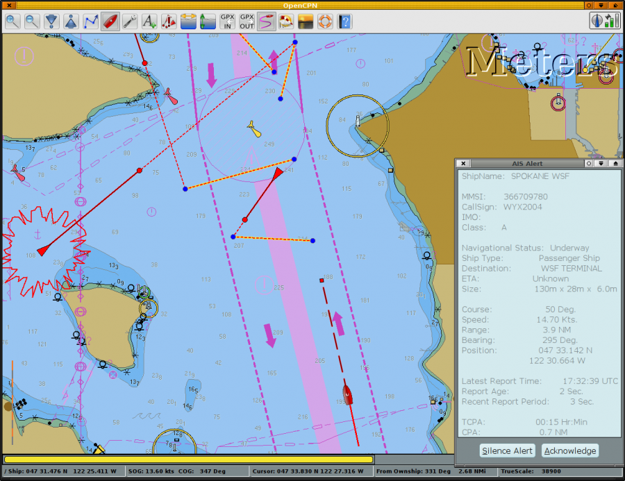
All the bells and whistles are activated! A new target appears
behind an island on our port bow, OpenCPN sounds an alarm and draws a
jagged circle around the new target. An AIS alert box with all the
information about the new target pops up. We can silence the noise but,
has to acknowledge before the box disappears.

Another way to present the AIS information. The AIS target list is
available through the right click menu. Clicking on a highlighted target
brings up the information dialog.
The ToolBox AIS Tab
This tab controls the behavior of many thing in the
AIS display. There are no "best" settings. It all depend on where you
are, what kind of navigation you are into and what kind of vessel you
are on. It is your responsibility to evaluate this.
AIS data port: Select your AIS input port on your
computer. When this is set to anything but "None", the AIS button
appears in the ToolBar. This button appears diffrent according to the
following conditions.
 AIS Alive. The default AIS button. This icon appears as soon as an AIS
port is active in the tool-box. It is also the normal state with an AIS
receiver working and with no targets of interest.
AIS Alive. The default AIS button. This icon appears as soon as an AIS
port is active in the tool-box. It is also the normal state with an AIS
receiver working and with no targets of interest.
 AIS Supressed. This icon indicates only that target suppression is
activated in the AIS tab in the ToolBox. Referring to the picture above
there are two sort of suppression:
AIS Supressed. This icon indicates only that target suppression is
activated in the AIS tab in the ToolBox. Referring to the picture above
there are two sort of suppression:
* Suppress display of all moored/anchored targets, max speed specified in dialog.
* Suppress Alerts for moored/anchored targets.
This icon will be over-ridden with the AIS alarm button if an alarm is,
or becomes, active according to the AIS tab alarms settings in the
toolbox.
 AIS Alarm. A target exist that raises the alarm as defined in the AIS
tab in the ToolBox. It is the three settings "CPA Calculations", that
rules if and when an alarm is raised.
AIS Alarm. A target exist that raises the alarm as defined in the AIS
tab in the ToolBox. It is the three settings "CPA Calculations", that
rules if and when an alarm is raised.
 AIS Disabled. No targets, if available, are shown on the screen. This
button toggles with the other buttons. For example, if the AIS alarm
button is visible, click the button and it will change to the "AIS
Disabled" button, and all targets, alarms etc, disappears from the
display. Click again and the original button and AIS display comes back.
AIS Disabled. No targets, if available, are shown on the screen. This
button toggles with the other buttons. For example, if the AIS alarm
button is visible, click the button and it will change to the "AIS
Disabled" button, and all targets, alarms etc, disappears from the
display. Click again and the original button and AIS display comes back.
CPA calculation: Rules for how and when the Closest
Point of Approach- CPA (when two vessels are nearest each other) is
calculated. There are three tick boxes, which can be activated with user
set values.
1. If the vessel is far away it is less interesting to
calculate CPA. In a busy waterway this could cut down on clutter and
processing speed if a reasonable value is set.
2. Similar arguments to No 1. This controls when a warning for minimum CPA distance is given.
3. Similar to No 2 this controls the alarm based on a
minimum time to CPA. A target is regarded as lost if regular
transmissions is not received, updating the vessels status.
Lost Targets: Rules for how lost targets should be handled on the display.
1. Target is regarded as lost if no transmission are
received for the number of minutes set here, the target will change on
the display and have a black bar across.
2. The lost target will be removed from the display after the number of minutes set here.
Display: If and how a vessels course and speed should be displayed and if stationary vessels should be on the screen.
1. An arrow will be shown in front of the vessel
representing it's COG (Course Over Ground). The length of this arrow and
the dot at the end of it represents the calculated position in the
number of minutes set here. Set easily calculated values. If a vessel
approaches you doing 15 kts and the time is set to 6 minutes, the dot
will be 1.5 nautical miles ahead of the vessel.
2. A track will be shown behind a target. This helps to judge the target vessels intentions.

3. An anchored or moored target  will not be displayed if the speed is less than the value set here.
will not be displayed if the speed is less than the value set here.
Rollover: Tick the boxes for the kind of information
shown when hovering with the cursor over a target. This is what you get
with all the settings ticked.

CPA/TCPA Alerts: When an alert is triggered, a jagged
circle in red is drawn around the target that set off the alarm.
Additional events can be set here, drawing more attention to the alarm.
For practical navigation, make sure your alarm sound is set.
1. Shows an alert dialog on the screen with target information when an alarm is triggered.
2. Sounds an alarm when an alarm is triggered.
3. Don't show alarms for anchored and moored targets.
Select Alert Sound. Select an alarm that suits you.
This alarm will also be used if an anchor watch is set. Due to copyright
issues, only a few sound files are included. Users can add their own
generic ".wav" sound files. The location for these files are
"/usr/local/share/opencpn/sounds/" on Linux and typically C:\Program
Files\OpenCPN\sounds on Windows XP.
Test Alert Sound. Test the selected sound and make sure this important feature is working
Enable Target Alert Acknowledge timeout. Once a target
alert is acknowledged, wait the set number of minutes before the alert
comes up again. The purpose is to avoid alarm loops in congested waters
due to own ships course and speed changes.
When exactly is an alarm activated?
An alert is set off if your boat is approaching the CPA, the blue dot on the extension of the course line, and the previously discussed set of conditions are met. Once the distance to the CPA increases, this happens when the involved vessels has passed each other, the alarm stops, even if the other conditions still apply.
+++
Quick Reference for targets:
 Potential Danger.
Potential Danger.
 No Danger. Not Identified ( Name not received)
No Danger. Not Identified ( Name not received)
 No Danger. Identified
No Danger. Identified
Lost Target
Anchored or moored. Displayed when the transmitted "Navigation status" is "at anchor".
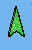
The V-shape stern indicates a Class B target. Tugboats and pilot boats
very often carry Class B transponders. These are often designed
specifically for small commercial boats, fishing boats and pleasure
crafts.
 This blue bit is the European, Inland AIS standard, "Blue Paddle"
signal, commonly seen on inland waters to indicate that the vessel
requests a "stbd-stbd" passage or crossing. This Blue Signal is
manually switched on/off on the target.
This blue bit is the European, Inland AIS standard, "Blue Paddle"
signal, commonly seen on inland waters to indicate that the vessel
requests a "stbd-stbd" passage or crossing. This Blue Signal is
manually switched on/off on the target.
- a diamond with plus inside for NavAids.
- AIS Base Station
Routes and Marks
Marks...
are the basic points that is used for many things, such as creating routes, marking fishing spots, good anchorages or anything of interest.
OpenCPN comes with a handful of different icons that can be assigned to a mark. Right click or use the Route Manager and activate the properties dialog. The Mark Icon window in the dialog shows the available icons.
A user can install his or her own icons to use with marks and "own ship".
1. Create a directory under the executable directory called UserIcons.
In MSW it looks like: Program Files/OpenCPN/UserIcons
In Linux create the directory: /usr/local/share/opencpn/UserIcons.
2. Add .xpm files to this directory. They can be any size. The name embedded within the xpm file becomes the name of the new waypoint icon. These new icons will appear on the Waypoint Properties dialog, and can be assigned to any waypoint. They can also be assigned in GPX Import files.
3. "sredna" has contributed a few nice icons. Download here.
For anyone interested, I enclose a small package containg some 24x24px icons that I find usable: red buoy, red flag, red flag buoy, yellow buoy, yellow flag, yellow buoy flag, blue flag, flag. To use the archive, unpack to your UserIcons directory. WARNING: there is no folder in the zip file. Feel free to modify/copy/anything with the icons as you like. They were created using KolourPaint in case anyone wonders.
4.To replace the default own ship icon
You can create a mark by right-clicking anywhere in the map, and selecting "Drop Mark Here" from the menu. The mark will have a triangle icon, to change that right-click the icon and select "Mark Properties".
You can move the mark by dragging it around.
When creating routes, OpenCPN will ask if it should use a nearby mark if any, when you add a routepoint.
You can delete a mark by right-clicking its icon, and selecting
"Delete Mark". Marks can be deleted through the Route Managers Waypoints
tab as well. Deleting a mark that is part of a route, will also change
the route.
The Man Over Board mark can be activated through the icon  in the toolbar, or through hitting Ctrl + Spacebar. The mark looks
loke the button and is dropped on present position. This mark cannot be
moved or deleted with the cursor or keyboard (by mistake), but can
still be deleted from the Route/Waypoint manager dialog. More about MOB here.
in the toolbar, or through hitting Ctrl + Spacebar. The mark looks
loke the button and is dropped on present position. This mark cannot be
moved or deleted with the cursor or keyboard (by mistake), but can
still be deleted from the Route/Waypoint manager dialog. More about MOB here.
A similar kind of locking can be activated for all marks. Goto ToolBox->Etc.
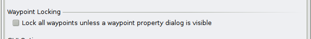
and tick the box. This feature is handy, to prevent accidentally moving a
mark. Activate this feature when underway, deactivate it when planning.
Jump to Position...
In the rightclick menu a related feature - Jump to Position - i available.A small dialog pop up where latitude and longitude can be entered. Pressing "OK" centers the display on this position, keeping the same scale. The values entered is kept during a session, but goes when restarting OpenCPN
Routes
 Will initiate the creation of a route. When clicked the cursor changes to a (
Will initiate the creation of a route. When clicked the cursor changes to a ( ) pencil. Left click along the desired route you want to make. This
will leave sequential waypoints as you click along. If your desired
route extends off the currently displayed chart, move the route cursor
into the desired area. You can zoom in and out with the mouse scroll
wheel or keyboard +/- keys during route creating. You can also right
click and select 'MAX DETAIL HERE' or 'Scale Out' during route creation.
When finished right click and choose end route from the context menu. 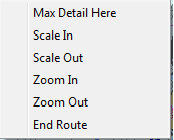
) pencil. Left click along the desired route you want to make. This
will leave sequential waypoints as you click along. If your desired
route extends off the currently displayed chart, move the route cursor
into the desired area. You can zoom in and out with the mouse scroll
wheel or keyboard +/- keys during route creating. You can also right
click and select 'MAX DETAIL HERE' or 'Scale Out' during route creation.
When finished right click and choose end route from the context menu. 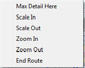
The right click menu is context sensitive, exactly what you get
depend on what sort of chart it is and if quilting is activated, for
example.
You should now have an inactive (Blue) route. Active routes are Red, inactivated routes are Blue.
Right clicking on a route brings up a menu with many alternatives, such as "Insert Waypint" and "Append Waypoint".
Multiple Routes
OpenCPN currently has no provision to hide routes, so all your routes will show on the chart all the time.
To keep the chart clear of useful but un-needed routes follow these steps:
• Create a folder called 'GPX_Routes', or another suitable name.
• Create your route.
• Use the Route Manager to export the route, with a descriptive file name and save it in GPX_Routes.
• Delete the route from the chart.
• You can export all your routes as one big file or export and delete a route as you create them
• When needed, simply use the Route Managers "Import" Button to open the route file.
To get rid of the way points left on the chart when a route has been imported and then deleted.
1. Open the Route Managers Waypoint tab and press the "Delete All" button
2. Say 'Yes' to: 'Are you sure you want to delete <ALL> waypoints?'
3. Right-click on the route line and select 'Delete route' or open the Route Managers Route-tab to 'Delete ' or 'Delete all'.
4. Answer in the affirmative.
Saving and Loading Routes and Marks
- Refer to The Route Manager and Data Import/Export to load and save data using The Route Manager
Activating and using routes
Right clicking on the track, changes the color from blue to orange and brings up a comprehensive menu.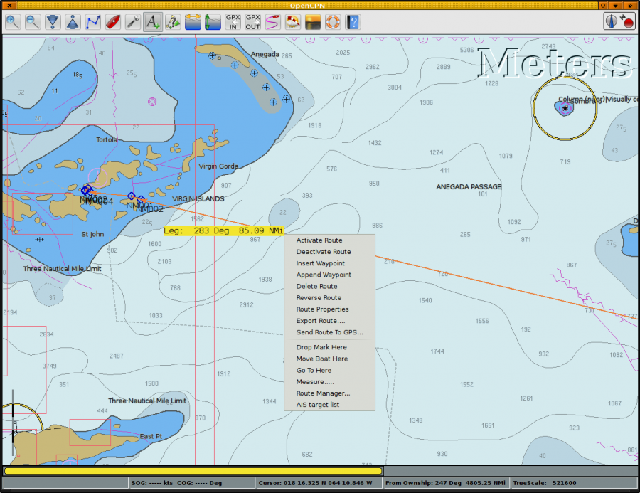
Clicking "Activate Route" or performing the same action through the Route Manager, changes the route color to red and new, route information window appears on the right side of the display. Once a route is activated, you are presented with the choice of "Deactivate Route" in the different menus.
Right clicking on a waypoint in a route activates a few options, otherwise not available.
- Activate Waypoint - Gives the direction to the chosen waypoint instead of the first waypoint in the route, which is the default. Usefull when joining, for example, an imported route, at an arbetrary waypoint.
- Activate Next in Route. Sometimes it makes more sense to go directly the following waypoint, instead of via the position of the nearest waypoint.
- Remove Waypoint from Route, but don't delete it.
- Delete Waypoint from Route.
- Mark/WP Properties. This is the only way to get to these properies, for the moment. The are not yet available in the Route manager. The dialog is the same as for an individual mark
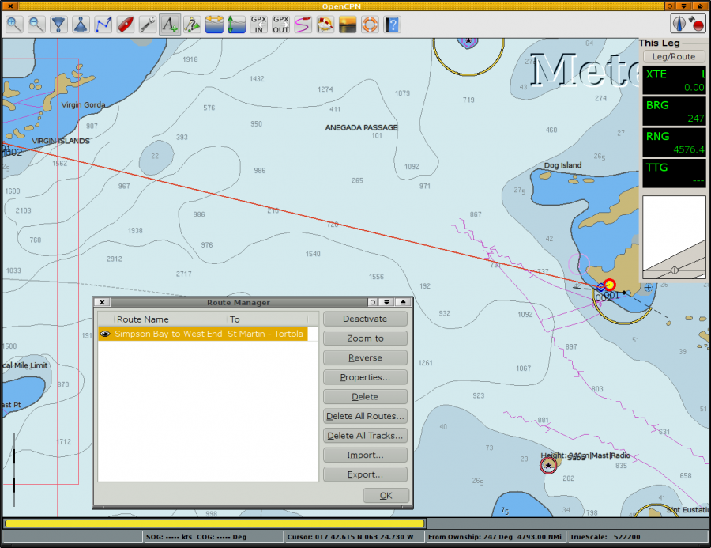
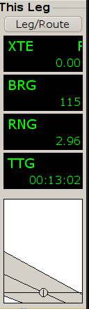
XTE Cross Track Error. How far off course your boat is.
BRG Direction to next waypoint.
RNG Distance to next waypoint.
TTG Time To Go to next waypoint.
Grapich illustration to the values above. Think about it as driving a car on a road.
The Route Manager and Data Import/Export
- Through the Route Manager
 OpenCPN can save and load waypoints, routes and tracks using the GPX
transfer format. We illustrate the Route Managers dialog with examples
using the Route-tab. The Tracks-tab and Waypoints-tab are similar.
OpenCPN can save and load waypoints, routes and tracks using the GPX
transfer format. We illustrate the Route Managers dialog with examples
using the Route-tab. The Tracks-tab and Waypoints-tab are similar. - This lets you save your routes and marks so you can have more than the active ones - for example to do route planning, or archive existing data.
- GPX format is supported by a wide variety of programs.
- You can have as many saved files as you wish, there are no limits on the number of saved files.
- Use this for passage planning by saving multiple possible routes for a passage.
- Save routes and tracks for historical/log purposes.
Routes

- To Sort routes click "Route Name" or "To"
- Properties:This button brings up a new dialog
- 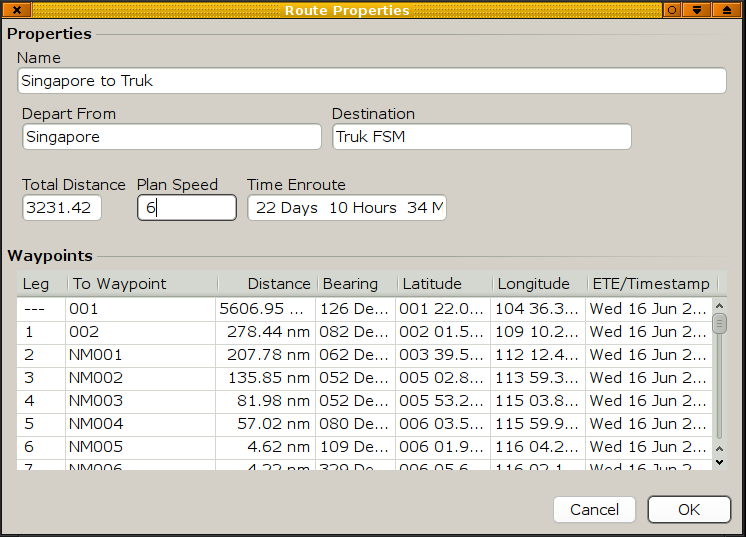
- Activate: Activates a route marked in the left part of the window.
- Zoom to: Zooms in on a route marked in the left part of the window.
- Reverse: Reverses a selected route.
- Delete: Deletes selected route or track.
- Export Route. Save the route on your computer for later use (import)
- Send to GPS. Send the Route to your GPS. For Garmin Users, make sure that the ToolBox->GPS->"Use Garmin GRMN/GRMN(Host) mode for Waypoint and Route uploads" box is ticked. The reason for this is that Garmin units cannot accept route uploads via NMEA0183. This is a "design feature" of all Garmin receivers.
- Delete All. Be careful. If you know you have saved the routes on your computer and are able to import the again, this is a simple way to clear the screen from routes. Better be safe than sorry, so save before deleting, if you want to be able to use the routes again.
- Import. Import one or more previously saved Routes. It is possible to select and import multiple routes. 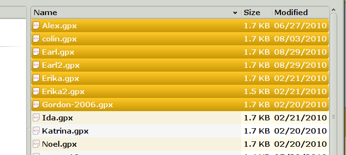
- Export All Routes. Saves all routes in one gpx file. This is done through a normal file saving dialog.
- Start Track. Same thing as pressing the track button in the ToolBar
- Route from Track. Make a route from a track, for future use. The new route is listed in the Route Manager tab.
- All other buttons behaves similar to corresponding buttons for Routes.
- Properties. More about this dialog on this page.
Tracks
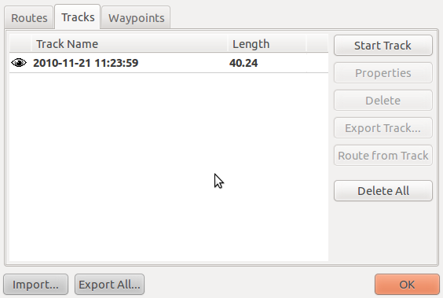
Waypoints

- Zoom to centers the chart display on the waypoint.
- Go To. Make an instant route from present position to the mark and activates the route. A similar instant route is created by right clicking and selecting "Go To Here" without first creating a mark. This instant route will be listed in the Route Tab.
- All other buttons behaves similar to corresponding buttons for Routes.
Planning Data
Creating and Importing Great Circle Routes
GPX import can be used for many things, three sample applications follows below. First, look at this picture. Planning a trip from Cape Town to Freemantle ?
Here you have two imported routes, the Southern route is a pure Great
Circle, the middle route is a Composite Great Circle, and then the
normal Rhumb Line furthest to the north.
A Great Circle is the shortest distance between two point on the globe. A
composite route is the same thing with the additional condition to stay
below a limiting latitude, in this case 39°30'S. A rhumb line is a
straight line on a Mercator chart. The Mercator projection is the
standard for OpenCPN.
- The pure great circle is 4610 nautical miles (M)
- The great circle as plotted with 5° of longitude between the waypoints is 4627 M
- The pure composite route, limited by latitude 39°30’ S is 4651M
- The composite route as plotted with 3° of longitude between waypoints (for the great circles) is 4669 M.
- The rhumb line is 4843 M.
Colder weather, stronger winds, higher seas and perhaps even icebergs. The great circle is just one factor in the decision making when planning a route, the weather is likely to be the deciding factor in most cases.
A great circle route is created with the "gc" Ruby script, that is cross platform.
To create a gpx file containing a great circle you have to enter the departure points lat & long, followed by the destination points lat & long and the optionally a limiting latitude for composite sailing and the distance in long between waypoints, default is set to 5°.
Need to see some offshore weather observations?
NOAAs NDBC site gives access to a lot of offshore observations from buoys and ships worldwide.
To easy visualize all this data the "ShipWxRep" script transform a limited set of all the available data into gpx waypoints. The format, as seen above is "wind direction, wind speed, time for observation, and air pressure". This can be helpful when evaluating the accuracy of grib files, even though the best tool in this respect probably is a calibrated digital barometer.
Plotting Miami Tropical Forecast Advisories.
If you only have access to low bandwith internet, this script is a way to quickly plott the contents of, for example an email, containing the forcast advisory. In any case, it is a good idea to have the forecast track of a tropical system available where you normally do your navigation and planning.
Download the gpx scripts here. For some help run each script without arguments.
Vector Chart Display
First, one very important setting for vector charts is handled directly from the main toolbar.
 This button toggles all text displayed on a vector chart On and Off
This button toggles all text displayed on a vector chart On and Off
Second, right-clicking on any point on a vector chart
bring up an information dialog. At the top of this is the "Object Query"
choice which pops up an information dialog, displaying the available
vector-chart attributes at this point. Choose from the menu on the left
side of the dialog, and watch the details on the right side.
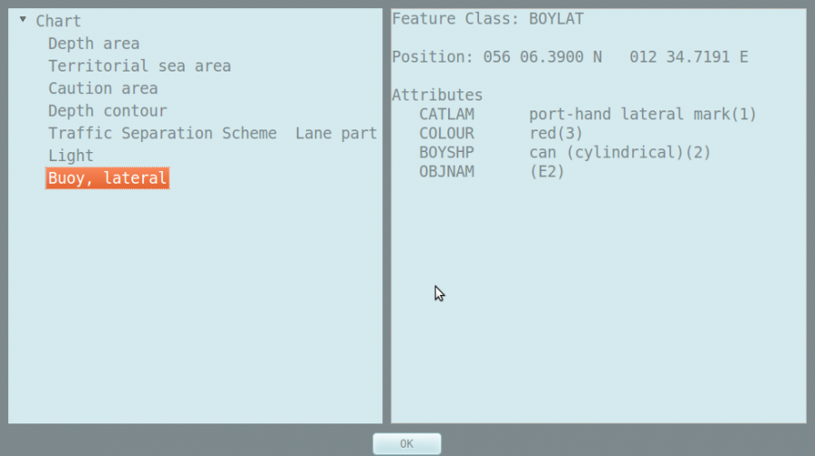
The example is taken from right-clicking on a buoy in a busy area.
Exactly what is shown in this dialog depend on the settings described below in "Display Cateegories".
Third, The ToolBox Vector Charts Tab is where everything else is handled.
Display Categories
Navigators has the choice of three pre-defined, different, presentations of ENC content, Base, Standard and Other. OpenCPN also has the very flexible Mariners Standard, which is better described as "Mariners Choice".
Base
Displays general information, including coastline, safety-contour, isolated danger,buoy, beacon traffic separation zone, etc.
From the IMO definitions:
Display Base means the level of SENC information which cannot be removed from
the display, consisting of information which is required at all times in all geographic areas and all circumstances. It is not intended to be sufficient for safe navigation.
Standard
Everything in "Base" and aids to navigation, fairways, channel limits, restricted navigation zones, restricted areas, etc..
All Other Information
Everything in "Standard" and more. This level could be described as "all essentials". More about what the the standards says about the content of these three levels.Mariners Standard
Users can use the filter tick box to set exactly what he or she wants displayed. A large set of filters, about 186, can be employed. They are all to the IHO S57 standard, and it is recommended to download S-57 Appendix A - IHO Object Catalog and have a copy onboard. Use your pdf viewers "search" or "find" function to quickly find what an acronym means.Note that Mariners Standard gives the user a much wider choice of what to display, than approved ECDIS system are allowed. It is for example possible to not display items in the Base category.
WARNING - it is possible to suppress essential information with "Mariners Standard".
If in doubt, switch to "Other", or use the "Select All" button.
Details can also be found on the Internet:
caris.com
s-57.com/
help.arcgis.com
To list their function here would be a long list and a separate manual entry, but to illustrate the way of thinking behind the acronyms, here are a few examples.
LNDARE = LANDAREA
TESARE = TERITORIAL SEA AREA
NAVLNE = NAVIGATION LINE
PIPOHD = PIPELINE OVERHEAD
SLOTOP = SLOPE TOPLINE
SLCONS = SHORELINE CONSTRUCTION
Each acronym also has an exhaustive official formal definition:
DEPCNT = DEPTH CONTOUR A line connecting points of equal water depth which is sometimes significantly displaced outside of soundings, symbols and other chart detail for clarity as well as generalization. Depth contours, therefor, often represent an approximate location of the line of equal depth as related to the surveyed line delineated on the source. Also referred to as depth curve.
A general recommendation would be to use "Mariners Standard" and to "Select All", to start with, and then switch of certain features as required.
As an example let's look at passing through the British gas fields in the SW North Sea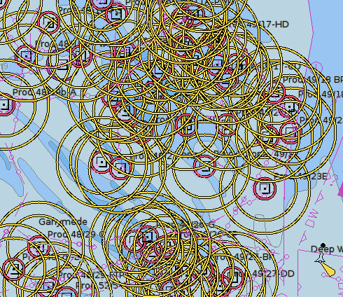
This is not easy, so we want to get rid of all those red and yellow circles.
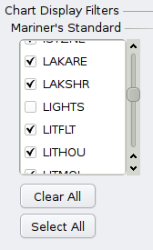
Untick LIGHTS.

Much better!
ShowSoundings
turns the measured depths on and of. Other settings also affects when soundings are displayed, for example SCAMIN. The dark black numbers are not soundings. Instead they refer to heights of nearby islets or cays. On official paper charts the soundings are printed in italics.
The bold number 20 refers to the land height of the unnamed cay SW of the number.
"Safety Depth" is set to 20 m, so all soundings greater than 20 are gray, while those less than 20 are black.
META objects
relates to information about the chart itself. With this switch on, an object query reveals such information as the buoyage system for the area and the quality of the survey.Show Important Text Only
displays only a bare minimum of text essential for navigation, such as course and bearing in a leading line (range) and bridge clearances.Use SCAMIN
makes sure that objects are only shown at a relevant minimum scale. Without SCAMIN everything is always shown, leading to very cluttered view at small scale (zoomed out).Show ATON labels
displays names and purposes of Aid To Navigation, such as number or name of buoys, information about conspicuous objects etc
Show light description
this tick box control display of light characteristics. Checking this
displays a label with a text describing the marker or lighthouse's
characteristics.
De-Clutter Text
Even when using SCAMIN there are cases when text labels overlaps or
overwrites other labels and creates a cluttered impression. Ticking this
box clears up this mess. To see all the labels, increase the scale for
the area.
Chart display style
Points
Paper chart draw the markers and lights just like the printed paper chart, while simplified uses icons to represent the same. Some like the one and some the other, a matter of taste.Paper Chart mode closely follows the IHO standard standard in this area. This mode is currently more developed than the simplified mode, as it has a higher priority in the development effort.
Boundaries
Plain normally just uses a dashed line, while the Symbolized version also uses triangles pointing into the area.Colors
Depth on the chart can be displayed with either 2 or 4 colors. This setting is closely related to the "Depths Settings". With 2 colors, and using a relatively large scale, areas with depth less than "Safety Depth" is blue, the rest is white. With 4 colors, there are different colors for areas less than "Shallow Depth", areas between "Shallow Depth" and "Safety Depth", areas between "Safety Depth" and "Deep Depth" and finally for areas deeper than "Deep Depth".CM93 Zoom Detail
Normal settings depend on a combination of personal preferences and present usage of map. To see more detail the "Zoom detail" can be set to a higher positive number or for navigation in shipping lanes to a negative numbers. Typical zoom level 5 is good for fishing when as much details are possible is of interest. Zoom level of +1, zero or -1 is usually fine for normal use.Positive values give more detail, but at a cost:
a. It simply takes longer to render larger scale charts covering more screen real estate.
b. There will be more instances of gray (NODATA) areas surrounding the larger scale charts as you zoom out, unless quilting is activated.
c. It can become dramatically slower if high detail is specified, and chart outlines are requested. In this case, the program has to read a lot more cells to get their outlines.
Conversely, negative values give less detail. Zooms are faster.
Depth Settings
Controls the coloring of the water as a function of depth. By setting
the Safety and Deep water right you will have a visible border to show
when to take care about shallow water. CM93 charts and S57 ENCS works very similar in this area.The charts contains depth area features according to fixed depth cutoff zones, usually 5, 10, and 20 meters. Intermediate values are not available in the database,if you select a value between those available, opencpn chooses the next higher value available for display of color.
The charts are inconsistent in this area, depending on the country issuing the original charts. For example in UK and the Netherlands the depth contours in CM93 are 2, 5 and 10 meter while in Sweden they are 3, 6 and 10 meter!
Generally for both S57 ENC and CM93, find these fixed depth cutoffs by right clicking -> Object Query ->Chart -> Depth Area. The two values DRVAL1 and DRVAL2 represents these built in cutoffs.
If for example, as is the case on the South China Sea Hydrographic Commissions charts, the shallowest area has a DRVAL1 = 0 m and a DRVAL2 = 10 m, there is, in most cases, no point in setting "Shallow Depth" to anything but 10 m.
Find out these cut off depth for your area and set the "Depth Settings" with this knowledge together with your preferences and activity.
With all the reservations above, the general case for 4 colors, will be described.
Shallow Depth
will color all water areas with water depths shallower than the set depth to a dark blue color.Soundings are in black.
Safety Depth
water deeper that Shallow but shallower that this depth will have a
paler blue color. The Shallow Depth contour clearly marked with dark
gray borderline.Soundings less than this depth are in black, while
soundings greater than this value are gray.
Deep Depth
water deeper than Safety Depth but less than Deep Depth will display a
light gray color. The Safety Depth contour is clearly marked with
black borderline. Water deeper than Deep Depth is displayed in white.Finally a word about drying heights, displayed in green. There is no detailed information available for the value of the drying heights, neither in CM93 ver 2 nor in most S57 charts, currently available for OpenCPN. Raster charts seems to be the only alternative for navigation in shallow areas with a large tide.
CM93 Offsets
Enable Manual CM93 Offsets
With this box ticket, the offset tool becomes available in the right-click menu, as well as a toggle to switch the offsets on/off.A CM93 Offset Display will also appear in the Toolbox->Settings Tab.
For more about this subject go to CM93_Offsets.
CM93 Offsets
This is new and advanced feature, under development, that requires good navigation knowledge and judgment of the user.A warning: CM93 OFFSETS ON - appears in the lower left corner of the chart display when the offsets are active.
The CM93 offset tool creates a global correction, that applies to all CM93 charts, even though the correction really only is valid for one specific CM93 Chart.
WARNING - This is likely to introduce errors in all charts except for the one actually used for finding the correction. Let the warning message on the screen remind you to turn this feature off when not using the chart where the correction was created. Keep notes on the corrections you apply since there is nothing on the screen telling you which chart the corrections apply to.
This feature has been introduce as the CM93 database has built in errors. Very little has been done to adjust the chart datums of the underlying paper charts, to WGS84.
Penrhyn Atol in the northern Cook Islands, is a good illustration to this.
The outlines of the next larrger scale charts for the Taruia Passage, can be seen below in their correct position.

But zooming out to the next smaler scale charts shows the outlines of Taruia Passage 2 miles to the NE !!

When CM93 offsets is enabled in the Vector tab, a few new entries are available in the right-click menu.
CM93 Offset Tool. Pressing this activates a "pencil" on the screen, that is used for the actual correction. The right-click menu now toggles to CM93 Offset Tool off.
CM93 Offset On. This activates the offset. The right-click menu now toggles to CM93 Offset Off.
An example will show the principles of how this tool works.
We are in an area where new accurate raster charts exists, and notice that the CM93 chart is slightly off.
On the raster chart we have dropped a mark, a triangle, at the position of a fixed navigation mark.

On the CM93 chart we notice an offset. With the measuring tool we find that this is 76 m in direction 322 degrees.
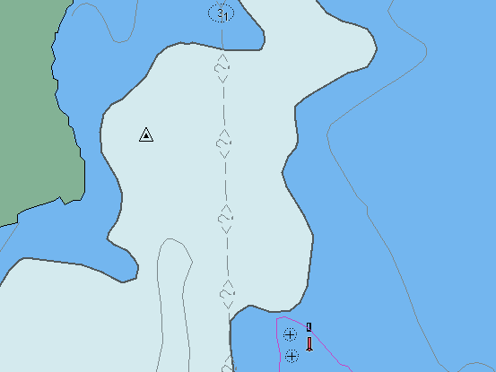
To correct this we press the "CM93 Offset Tool" in the right click menu.
A pencil appears, similar to the "Measure Tool". Point the tip of the pencil at the base of the fixed mark an click. An arrow with a blue line to the point where we clicked shows up on the screen. See picture below. Point the arrow at the dot in the triangle mark and click.

The triangle instantly "jumps" to where we first clicked - the position of the fixed mark.
This CM93 chart-cell will now agree with the raster-chart.

The correction can be switched on and off through the right-click menu or in the ToolBox->Settings Tab. In the settings tab the actual offsets are shown. It is also possible to enter offsets via the keyboard here.
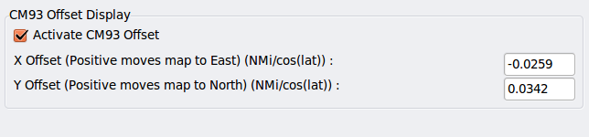
Plugins
OpenCPN tries to keep features to a minimum so that it is lean, mean and easy to use. As of OpenCPN version 2.2 (currently in Beta), a plugin infrastructure was introduced to allow for those niche features to be added by third parties. So, the community of OpenCPN developers, and users can expand our desired feature sets to be powerfully taylored.OpenCPN offers two default plugins available preinstalled:
More plugins can be downloaded from the Plugins download section. And information on how to use individual Plugins is available in the Plugin Manual.
Enabling a Plugin
Plugins are made available by clicking on the plugin in the ToolBox Plugin Tab. Once this is done, an "Enable" button appears. Pressing this button avtivates the plugin icon in the ToolBar.
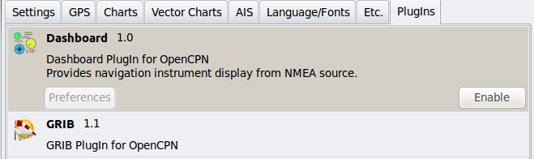

FAQ
- What are all those 'U' things all over my chart?
The feature being rendered is S57 Text relating to 'M_QUAL'.
This is a meta-object describing the quality of data shown. The Attribute of interest is CATZOC, or "Category of Zone of Confidence". The value on most US ENC's is "6", or "un-assessed". Thus, the 'U'.
You can turn this symbol off in OpenCPN by de-selecting the box next to M_QUAL in 'Tool Box' / 'Vector Charts' tab 'Mariners Standard' selection list box.
To learn the acronyms used in this application search the S57 'Object and Attribute' catalog at: http://www.s-57.com/
- I have routes and way points in Sea Clear and I would like to import them into OpenCPN. Can I do it?
Yes. I had originally created and maintained all my routes and waypoints in SeaClear, exported them, loaded them into GPSUtility (for Windows) and saved them as text files.
To import into OpenCPN I opened all my text files (routes and waypoints) with GPSUtility, saved that out as one big gpx file, and loaded it into OpenCPN. Works like a champ.
I've edited them and saved them back out as GPX files with no trouble.
Individual routes can be edited and saved in appropriately named GPX files.
- Whenever I try to open a particular chart OpenCPN crashes. What's going on?
Chances are the chart file is corrupted. Note the name and number of the suspect chart and replace it with a fresh download.
NOTE: A list of the charts with their names and file names can be found in the README.TEXT that accompanies the charts downloaded from NOOA.
Some unzip utilities for Linux are problematic when opening ECN's. If there are many corrupt charts in your download, try using a different unzip utility.
- OpenCPN and Great Circle Navigation
Raster charts display bearings and headings as straight, measurable lines on the chart. Similarly, Vector ENC's are rendered as Mercator projections in OpenCPN and most other ECS's for the same reason.
For typical coastal navigation, errors which occur using rhumb line instead of great circle calculations are small for the distances usually covered by one chart.
Mercator Charts and Mercator navigation is the standard for most navigational purposes. Other terms used instead of "Mercator Sailing" is "Loxodrome Sailing" or "Rhumb Line Sailing".
OpenCPN uses Mercator Sailing and cannot directly display Great Circles, but through GPX route import , Great Circle Routes can be used as explained on Planning Data page in the wiki.
 This article is in not complete. You are welcome to assist in its construction by editing it as well. Everyone is allowed to edit after creating and account and/or logging in.
This article is in not complete. You are welcome to assist in its construction by editing it as well. Everyone is allowed to edit after creating and account and/or logging in.
Chart Conversion Manual
Table Of Contents
Conversion Using Linux
How to convert your chart images to a format that OpenCPN will read using Linux
Do you have a bunch of scanned charts of your area, in graphical format (jpg, tiff, etc.) and OpenCPN won't read them?
Here's how you can – with a bit of work, sure, but worth the effort – convert them into usable electronic charts.
The tools:
- ImageMagick: http://www.imagemagick.org/ (Binary releases are available for a few distributions, for Ubuntu just get it with the package manager, it's in the repositories.)
- Libbsb: http://libbsb.sourceforge.net (You will need some version of libtiff-dev and libpng-dev installed to build it. A .deb package that worked fine for me can be found here.
- mc2bsbh: you can get it here.
- Get the c++ source file, and from its directory, type:
- g++ -Wall -s -O2 mc2bsbh.cpp -o mc2bsbh
- It compiled without any problem on my (very standard) Karmic. I personally put it in /usr/local/bin, which I own as user, so it's in the PATH and can be called from anywhere, if you leave it in the working directory, use ./mc2bsbh
- MapCal: part of the free navigation package SeaClear .
- Note: I had some problems running it with Wine (saving the calibration) but I can't reproduce the error and now it works fine. One suggestion is, make the directory you're going to write the calibration in world-writable before running MapCal.
- The pcx2tif script (optional) , found here.
This is a great little shell script by "taifun" used to convert old
Maptech-style formats of tiled charts. If you find your chart is made of
little bits instead of a whole file, this will stitch them all together
in TIFF format.
- Instructions for use are in the tarball.
Once we have the tools all set up, we can get to work. The process in in five steps:
- Convert a chart image to tiff with imagemagick.
- Convert it again to png with the same (you'll need both files).
- Load the png version of the chart in Mapcal and calibrate it.
- Generate the chart header with mc2bsbh, and make the .kap version of the chart, with libbsb.
- Copy the resulting .kap into opencpn's chart dir, and reload the chart database.
Let's see them in detail:
Steps 1 and 2:
Say you have a chart in jpeg format called chart.jpg.
From the command line, use:
convert chart.jpg -colors 127 chart.gif
and then again,
convert chart.gif -colors 127 chart.tif
and then again,
convert chart.jpg -colors 127 chart.png
(there is a script that does this for multiple files, get it here , just remove the .doc extension, this is the example)
Throw away the .gif file. Don't ask me why you need to generate it in
the first place, but apparently you do, it's an imagemagick thing. Keep
the .tif and the .png ones a while longer, though. You'll be even
happier to get rid of them when you've finished.
Step 3:
- Open MapCal.
- File, Open Image. Open the .png version of your chart. Ignore the data window for the moment, you'll do that later, click OK. You should see your chart.
- To calibrate it, choose a point near a corner for which it is easy to know lat/lon. Right-click on it, and choose Add New Cal. Point. To zoom in and out use the little + and – buttons at the bottom.
- Ignore the fact that Latitude has three integer figures, we're still talking about the Earth. Enter the coordinates and proceed for at least three more points, near the corners.
- Click Activate Changes. Check that the grid makes sense. Click Border, draw a border around the chart (that part is easy).
- You should also enter some data for the chart: Edit, Chart Information.
- The Chart Name will show up in OpenCPN to remind you of all your hard work, choose it well.
- For this example we'll just use “chart”.
- You should also enter at least Scale (found on the chart) Depth Units, Projection (Mercator most likely) and Datum (WGS84 most likely, but be careful with older charts). All of this information should be found on the chart itself.
- For more details, you have the SeaClear Manual.
- File, Save Calibration. Repeat ad-lib for any other charts and exit. If everything went well, you'll find a file called CHARTCAL.DIR in the same directory as you loaded your png chart from. This is used to (finally) make your calibrated chart that OpenCPN will use, as detailed in
Step 4:
- Generate the chart header from the command line:
- mc2bsbh CHARTCAL.DIR
- You should see:
- Create CHART.hdr
(the .hdr file must have DOS newlines)
- Create CHART.hdr
- So type:
- tif2bsb -c 127 CHART.hdr chart.tif chart.kap
- At which point you should have a chart.kap file that OpenCPN will happily use.
- This can be done for many charts at a time by using the tif2bsb batch script from the mc2bsbh page. If it gives you any problem with lowercase-uppercase names, try:
for i in `find * -depth`; do (mv $i `echo $i|tr [:upper:] [:lower:]`); done
which will convert all files in the current directory to lowercase (works great for me).
If you get an error like /bin/bash^M, no such shell (I did), it's a cr/lf thing, just edit it, type [enter] at the end of each line (there's only 7) and get rid of the blank ones. -
- Proceed to install the filename(s).kap into OpenCPN (see installing charts)
Note 1: you can also make the .hdr file “manually”, using a template and entering the calibration data with a text editor, but I won't go into that for the moment.
Note 2 (about the commands, so if there's any problem you know what to look for) :
- convert is a command from imagemagick.
tif2bsb is a command from libbsb.
mc2bsbh is a standalone thing.
Note 3: (by Jonasberg, on the colors in the conversions) :
- The "127" is the number of individual
colors used. Sometimes it pays of to reduce this number to get a smaller
file size, say, if you start with a bitmapped format like png that
contains fewer colors.
If you use it "standalone" and not as part of the "charts" script, change the lines,
convert new1.gif - colors 127 $1.tif
(and .png) to
convert new1.gif -colors 127 `basename $PWD`.tif
(and .png)
because the "$1" will not create files with [directory_name].tif and .png, it won't create any files at all.
Using `basename $PWD`will make files called [current directory name].tif (and .png).
So just edit the script to whatever suits you best.
libBSB
LibBSB is essential for converting chart pictures to usable BSB type charts.
Full documentation and source code is available at libbsb.sourceforge.net.
Only binary packages for Debian based Linux distros and Windows are available for download here. There may be packages available for alternative operating systems elsewhere.
License and Authors
OpenCPN is licensed under the GNU General Public License (GPL)